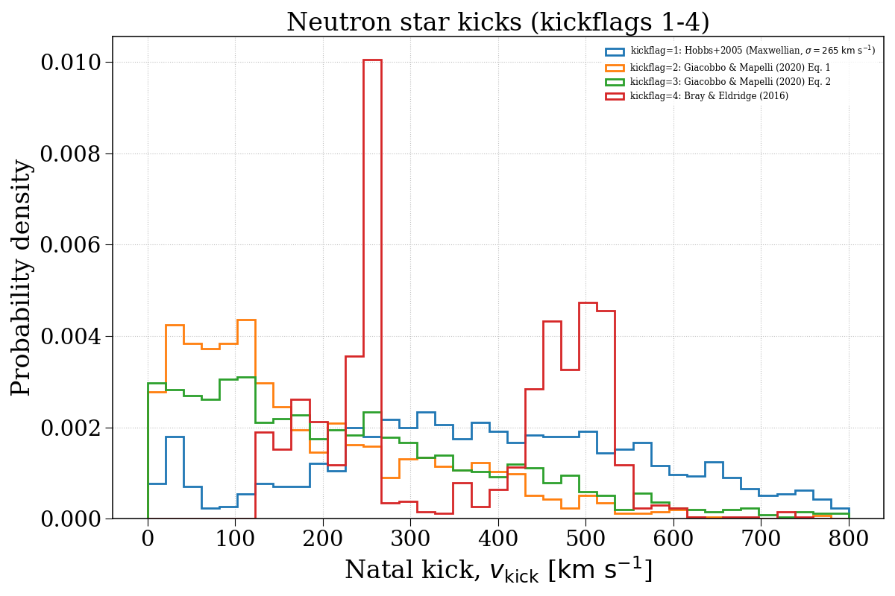
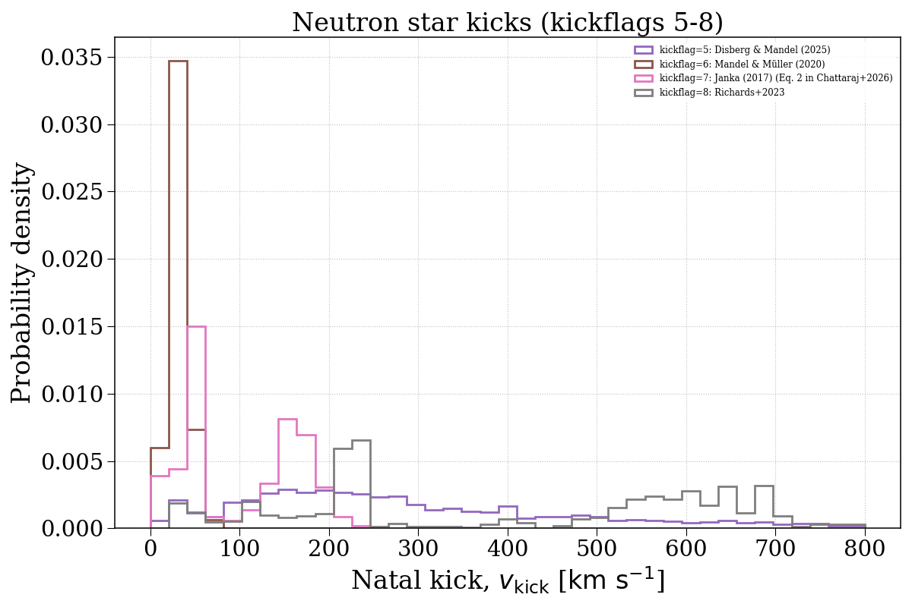
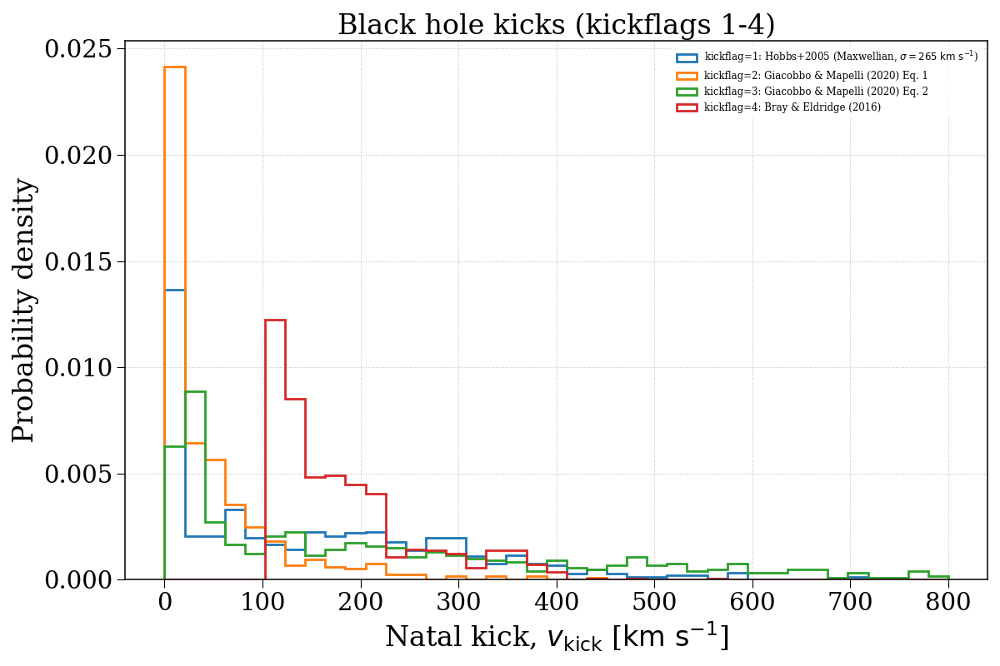
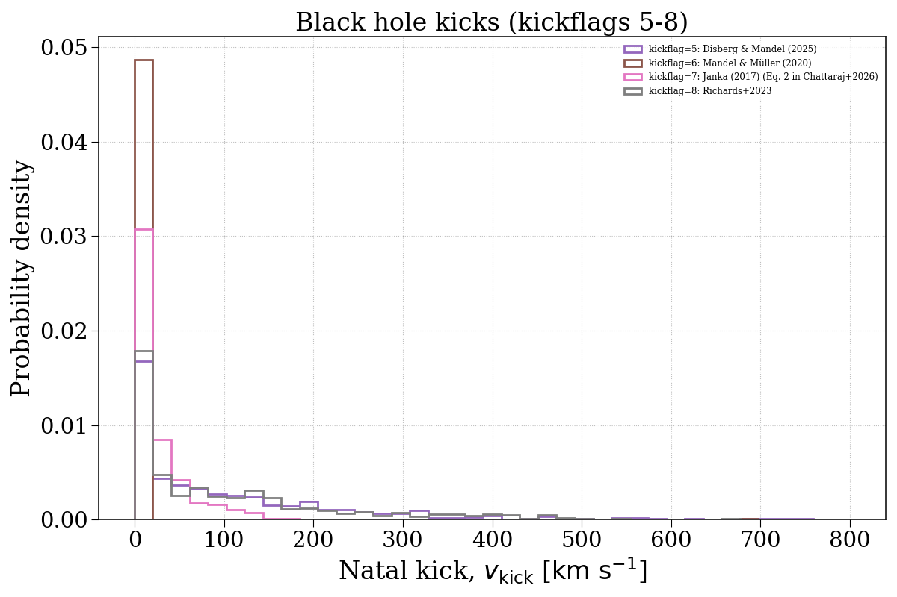

Note
Go to the end to download the full example code.
kickflag¶
This example demonstrates how changing the kickflag parameter can affect the natal kick velocity distributions of compact objects. We separate this into neutron stars and black holes.




Evolving population with kickflag = 1...
Evolving: 0%| | 0/2204 [00:00<?, ?sys/s]
Evolving: 1%| | 24/2204 [00:00<00:22, 98.25sys/s]
Evolving: 3%|▎ | 58/2204 [00:00<00:11, 179.44sys/s]
Evolving: 4%|▎ | 80/2204 [00:00<00:17, 120.11sys/s]
Evolving: 5%|▍ | 105/2204 [00:00<00:14, 146.37sys/s]
Evolving: 6%|▌ | 124/2204 [00:00<00:14, 144.04sys/s]
Evolving: 6%|▋ | 141/2204 [00:01<00:14, 141.56sys/s]
Evolving: 7%|▋ | 157/2204 [00:01<00:14, 137.25sys/s]
Evolving: 8%|▊ | 173/2204 [00:01<00:14, 137.53sys/s]
Evolving: 9%|▊ | 188/2204 [00:01<00:17, 112.11sys/s]
Evolving: 9%|▉ | 201/2204 [00:01<00:17, 113.44sys/s]
Evolving: 10%|▉ | 220/2204 [00:01<00:15, 128.37sys/s]
Evolving: 11%|█ | 234/2204 [00:01<00:15, 126.94sys/s]
Evolving: 11%|█▏ | 248/2204 [00:01<00:17, 114.01sys/s]
Evolving: 12%|█▏ | 270/2204 [00:02<00:14, 131.24sys/s]
Evolving: 13%|█▎ | 284/2204 [00:02<00:18, 105.85sys/s]
Evolving: 13%|█▎ | 296/2204 [00:02<00:20, 92.43sys/s]
Evolving: 15%|█▍ | 325/2204 [00:02<00:14, 133.62sys/s]
Evolving: 15%|█▌ | 341/2204 [00:02<00:13, 134.10sys/s]
Evolving: 16%|█▌ | 357/2204 [00:02<00:17, 102.69sys/s]
Evolving: 17%|█▋ | 373/2204 [00:03<00:16, 113.03sys/s]
Evolving: 18%|█▊ | 387/2204 [00:03<00:20, 87.83sys/s]
Evolving: 19%|█▊ | 409/2204 [00:03<00:15, 112.36sys/s]
Evolving: 19%|█▉ | 424/2204 [00:03<00:16, 104.79sys/s]
Evolving: 20%|█▉ | 437/2204 [00:03<00:20, 86.86sys/s]
Evolving: 21%|██ | 467/2204 [00:03<00:13, 125.06sys/s]
Evolving: 22%|██▏ | 483/2204 [00:04<00:17, 100.56sys/s]
Evolving: 23%|██▎ | 508/2204 [00:04<00:14, 115.52sys/s]
Evolving: 24%|██▍ | 525/2204 [00:04<00:13, 125.00sys/s]
Evolving: 25%|██▍ | 540/2204 [00:04<00:15, 104.87sys/s]
Evolving: 25%|██▌ | 553/2204 [00:04<00:15, 105.00sys/s]
Evolving: 26%|██▌ | 569/2204 [00:04<00:14, 112.58sys/s]
Evolving: 27%|██▋ | 586/2204 [00:04<00:12, 124.81sys/s]
Evolving: 27%|██▋ | 603/2204 [00:05<00:13, 122.86sys/s]
Evolving: 28%|██▊ | 617/2204 [00:05<00:12, 124.89sys/s]
Evolving: 29%|██▊ | 631/2204 [00:05<00:12, 128.06sys/s]
Evolving: 29%|██▉ | 645/2204 [00:05<00:12, 121.65sys/s]
Evolving: 30%|██▉ | 658/2204 [00:05<00:17, 89.65sys/s]
Evolving: 31%|███ | 685/2204 [00:05<00:12, 125.15sys/s]
Evolving: 32%|███▏ | 700/2204 [00:05<00:12, 124.42sys/s]
Evolving: 32%|███▏ | 714/2204 [00:06<00:12, 121.85sys/s]
Evolving: 33%|███▎ | 728/2204 [00:06<00:12, 115.33sys/s]
Evolving: 34%|███▍ | 744/2204 [00:06<00:11, 123.59sys/s]
Evolving: 34%|███▍ | 758/2204 [00:06<00:11, 122.17sys/s]
Evolving: 35%|███▌ | 773/2204 [00:06<00:11, 123.72sys/s]
Evolving: 36%|███▌ | 786/2204 [00:06<00:16, 87.44sys/s]
Evolving: 37%|███▋ | 815/2204 [00:06<00:10, 127.69sys/s]
Evolving: 38%|███▊ | 831/2204 [00:07<00:12, 112.11sys/s]
Evolving: 38%|███▊ | 845/2204 [00:07<00:12, 112.08sys/s]
Evolving: 39%|███▉ | 858/2204 [00:07<00:11, 113.43sys/s]
Evolving: 40%|███▉ | 871/2204 [00:07<00:15, 87.12sys/s]
Evolving: 40%|████ | 882/2204 [00:07<00:14, 90.98sys/s]
Evolving: 41%|████ | 893/2204 [00:07<00:15, 84.70sys/s]
Evolving: 42%|████▏ | 920/2204 [00:07<00:10, 117.87sys/s]
Evolving: 42%|████▏ | 933/2204 [00:08<00:11, 112.85sys/s]
Evolving: 43%|████▎ | 950/2204 [00:08<00:10, 120.67sys/s]
Evolving: 44%|████▍ | 966/2204 [00:08<00:10, 123.70sys/s]
Evolving: 44%|████▍ | 980/2204 [00:08<00:09, 127.30sys/s]
Evolving: 45%|████▌ | 994/2204 [00:08<00:13, 91.65sys/s]
Evolving: 46%|████▌ | 1015/2204 [00:08<00:10, 115.98sys/s]
Evolving: 47%|████▋ | 1032/2204 [00:08<00:09, 124.08sys/s]
Evolving: 48%|████▊ | 1047/2204 [00:09<00:12, 89.90sys/s]
Evolving: 49%|████▉ | 1075/2204 [00:09<00:08, 125.74sys/s]
Evolving: 50%|████▉ | 1092/2204 [00:09<00:11, 98.26sys/s]
Evolving: 51%|█████ | 1119/2204 [00:09<00:08, 128.34sys/s]
Evolving: 52%|█████▏ | 1136/2204 [00:09<00:08, 119.36sys/s]
Evolving: 52%|█████▏ | 1154/2204 [00:10<00:08, 117.45sys/s]
Evolving: 53%|█████▎ | 1171/2204 [00:10<00:08, 126.26sys/s]
Evolving: 54%|█████▍ | 1186/2204 [00:10<00:08, 123.06sys/s]
Evolving: 54%|█████▍ | 1200/2204 [00:10<00:08, 124.06sys/s]
Evolving: 55%|█████▌ | 1214/2204 [00:10<00:08, 115.05sys/s]
Evolving: 56%|█████▌ | 1230/2204 [00:10<00:07, 123.43sys/s]
Evolving: 56%|█████▋ | 1243/2204 [00:10<00:08, 116.89sys/s]
Evolving: 57%|█████▋ | 1261/2204 [00:10<00:07, 131.77sys/s]
Evolving: 58%|█████▊ | 1275/2204 [00:11<00:08, 104.79sys/s]
Evolving: 59%|█████▊ | 1294/2204 [00:11<00:07, 122.08sys/s]
Evolving: 59%|█████▉ | 1308/2204 [00:11<00:09, 99.15sys/s]
Evolving: 60%|██████ | 1329/2204 [00:11<00:07, 120.20sys/s]
Evolving: 61%|██████ | 1343/2204 [00:11<00:07, 122.73sys/s]
Evolving: 62%|██████▏ | 1358/2204 [00:11<00:06, 125.26sys/s]
Evolving: 62%|██████▏ | 1374/2204 [00:11<00:06, 124.69sys/s]
Evolving: 63%|██████▎ | 1388/2204 [00:12<00:08, 91.12sys/s]
Evolving: 63%|██████▎ | 1399/2204 [00:12<00:09, 89.26sys/s]
Evolving: 65%|██████▍ | 1430/2204 [00:12<00:05, 134.27sys/s]
Evolving: 66%|██████▌ | 1446/2204 [00:12<00:05, 130.91sys/s]
Evolving: 66%|██████▋ | 1465/2204 [00:12<00:05, 142.61sys/s]
Evolving: 67%|██████▋ | 1481/2204 [00:12<00:05, 132.98sys/s]
Evolving: 68%|██████▊ | 1496/2204 [00:12<00:05, 125.60sys/s]
Evolving: 69%|██████▊ | 1510/2204 [00:12<00:05, 123.58sys/s]
Evolving: 69%|██████▉ | 1527/2204 [00:13<00:05, 131.06sys/s]
Evolving: 70%|██████▉ | 1541/2204 [00:13<00:05, 132.39sys/s]
Evolving: 71%|███████ | 1555/2204 [00:13<00:06, 97.43sys/s]
Evolving: 72%|███████▏ | 1578/2204 [00:13<00:05, 123.60sys/s]
Evolving: 72%|███████▏ | 1595/2204 [00:13<00:04, 131.56sys/s]
Evolving: 73%|███████▎ | 1610/2204 [00:13<00:05, 101.60sys/s]
Evolving: 74%|███████▍ | 1633/2204 [00:14<00:04, 123.96sys/s]
Evolving: 75%|███████▍ | 1652/2204 [00:14<00:05, 100.71sys/s]
Evolving: 76%|███████▋ | 1681/2204 [00:14<00:03, 136.16sys/s]
Evolving: 77%|███████▋ | 1699/2204 [00:14<00:03, 131.65sys/s]
Evolving: 78%|███████▊ | 1715/2204 [00:14<00:04, 122.04sys/s]
Evolving: 79%|███████▊ | 1734/2204 [00:14<00:03, 134.90sys/s]
Evolving: 79%|███████▉ | 1750/2204 [00:14<00:03, 135.86sys/s]
Evolving: 80%|████████ | 1765/2204 [00:15<00:03, 139.00sys/s]
Evolving: 81%|████████ | 1780/2204 [00:15<00:03, 137.77sys/s]
Evolving: 81%|████████▏ | 1795/2204 [00:15<00:03, 114.17sys/s]
Evolving: 82%|████████▏ | 1808/2204 [00:15<00:03, 107.87sys/s]
Evolving: 83%|████████▎ | 1821/2204 [00:15<00:03, 107.68sys/s]
Evolving: 83%|████████▎ | 1836/2204 [00:15<00:03, 104.03sys/s]
Evolving: 84%|████████▍ | 1858/2204 [00:15<00:02, 130.24sys/s]
Evolving: 85%|████████▍ | 1872/2204 [00:15<00:02, 132.52sys/s]
Evolving: 86%|████████▌ | 1886/2204 [00:16<00:02, 120.52sys/s]
Evolving: 86%|████████▋ | 1901/2204 [00:16<00:02, 122.85sys/s]
Evolving: 87%|████████▋ | 1914/2204 [00:16<00:02, 104.06sys/s]
Evolving: 87%|████████▋ | 1926/2204 [00:16<00:02, 107.13sys/s]
Evolving: 88%|████████▊ | 1940/2204 [00:16<00:02, 115.04sys/s]
Evolving: 89%|████████▊ | 1956/2204 [00:16<00:02, 120.29sys/s]
Evolving: 89%|████████▉ | 1970/2204 [00:16<00:01, 121.53sys/s]
Evolving: 90%|████████▉ | 1983/2204 [00:16<00:01, 122.76sys/s]
Evolving: 91%|█████████ | 1997/2204 [00:17<00:01, 124.69sys/s]
Evolving: 91%|█████████ | 2010/2204 [00:17<00:01, 123.77sys/s]
Evolving: 92%|█████████▏| 2023/2204 [00:17<00:01, 91.71sys/s]
Evolving: 93%|█████████▎| 2040/2204 [00:17<00:01, 109.27sys/s]
Evolving: 93%|█████████▎| 2059/2204 [00:17<00:01, 126.69sys/s]
Evolving: 94%|█████████▍| 2073/2204 [00:17<00:01, 111.59sys/s]
Evolving: 95%|█████████▍| 2089/2204 [00:17<00:00, 121.67sys/s]
Evolving: 96%|█████████▌| 2105/2204 [00:17<00:00, 126.27sys/s]
Evolving: 96%|█████████▌| 2119/2204 [00:18<00:00, 97.14sys/s]
Evolving: 97%|█████████▋| 2140/2204 [00:18<00:00, 116.31sys/s]
Evolving: 98%|█████████▊| 2161/2204 [00:18<00:00, 135.85sys/s]
Evolving: 99%|█████████▉| 2177/2204 [00:18<00:00, 117.52sys/s]
Evolving: 100%|█████████▉| 2197/2204 [00:18<00:00, 128.43sys/s]
Evolving: 100%|██████████| 2204/2204 [00:18<00:00, 117.38sys/s]
[Time taken: 19.1381 seconds]
Evolving population with kickflag = 2...
Evolving: 0%| | 0/2204 [00:00<?, ?sys/s]
Evolving: 0%| | 9/2204 [00:00<00:28, 76.71sys/s]
Evolving: 1%| | 22/2204 [00:00<00:22, 95.00sys/s]
Evolving: 1%|▏ | 32/2204 [00:00<00:31, 69.29sys/s]
Evolving: 3%|▎ | 60/2204 [00:00<00:17, 123.67sys/s]
Evolving: 3%|▎ | 74/2204 [00:00<00:24, 87.26sys/s]
Evolving: 5%|▍ | 100/2204 [00:00<00:16, 124.63sys/s]
Evolving: 5%|▌ | 116/2204 [00:01<00:15, 132.13sys/s]
Evolving: 6%|▌ | 133/2204 [00:01<00:14, 139.61sys/s]
Evolving: 7%|▋ | 149/2204 [00:01<00:15, 136.29sys/s]
Evolving: 7%|▋ | 164/2204 [00:01<00:15, 132.57sys/s]
Evolving: 8%|▊ | 179/2204 [00:01<00:20, 99.44sys/s]
Evolving: 9%|▉ | 201/2204 [00:01<00:17, 115.00sys/s]
Evolving: 10%|▉ | 220/2204 [00:01<00:15, 127.00sys/s]
Evolving: 11%|█ | 237/2204 [00:01<00:14, 133.00sys/s]
Evolving: 11%|█▏ | 252/2204 [00:02<00:14, 131.79sys/s]
Evolving: 12%|█▏ | 266/2204 [00:02<00:14, 132.35sys/s]
Evolving: 13%|█▎ | 280/2204 [00:02<00:19, 100.13sys/s]
Evolving: 13%|█▎ | 294/2204 [00:02<00:21, 88.50sys/s]
Evolving: 15%|█▍ | 326/2204 [00:02<00:14, 126.12sys/s]
Evolving: 16%|█▌ | 343/2204 [00:03<00:18, 101.29sys/s]
Evolving: 17%|█▋ | 365/2204 [00:03<00:15, 121.88sys/s]
Evolving: 17%|█▋ | 380/2204 [00:03<00:15, 114.47sys/s]
Evolving: 18%|█▊ | 394/2204 [00:03<00:17, 101.13sys/s]
Evolving: 19%|█▊ | 413/2204 [00:03<00:15, 118.90sys/s]
Evolving: 19%|█▉ | 427/2204 [00:03<00:15, 113.17sys/s]
Evolving: 20%|█▉ | 440/2204 [00:03<00:19, 88.59sys/s]
Evolving: 21%|██ | 467/2204 [00:04<00:14, 122.92sys/s]
Evolving: 22%|██▏ | 482/2204 [00:04<00:18, 90.66sys/s]
Evolving: 23%|██▎ | 508/2204 [00:04<00:14, 119.55sys/s]
Evolving: 24%|██▍ | 527/2204 [00:04<00:13, 127.18sys/s]
Evolving: 25%|██▍ | 543/2204 [00:04<00:15, 108.38sys/s]
Evolving: 25%|██▌ | 559/2204 [00:04<00:13, 117.73sys/s]
Evolving: 26%|██▌ | 573/2204 [00:05<00:14, 111.84sys/s]
Evolving: 27%|██▋ | 590/2204 [00:05<00:13, 122.90sys/s]
Evolving: 27%|██▋ | 604/2204 [00:05<00:13, 118.21sys/s]
Evolving: 28%|██▊ | 621/2204 [00:05<00:12, 130.02sys/s]
Evolving: 29%|██▉ | 635/2204 [00:05<00:12, 129.82sys/s]
Evolving: 29%|██▉ | 649/2204 [00:05<00:12, 128.25sys/s]
Evolving: 30%|███ | 663/2204 [00:05<00:16, 96.12sys/s]
Evolving: 31%|███ | 680/2204 [00:05<00:14, 107.62sys/s]
Evolving: 32%|███▏ | 699/2204 [00:06<00:11, 126.22sys/s]
Evolving: 32%|███▏ | 714/2204 [00:06<00:12, 123.13sys/s]
Evolving: 33%|███▎ | 728/2204 [00:06<00:12, 120.91sys/s]
Evolving: 34%|███▎ | 741/2204 [00:06<00:12, 121.61sys/s]
Evolving: 34%|███▍ | 754/2204 [00:06<00:13, 108.25sys/s]
Evolving: 35%|███▌ | 773/2204 [00:06<00:11, 123.77sys/s]
Evolving: 36%|███▌ | 786/2204 [00:06<00:16, 86.08sys/s]
Evolving: 37%|███▋ | 815/2204 [00:07<00:11, 122.85sys/s]
Evolving: 38%|███▊ | 830/2204 [00:07<00:12, 114.48sys/s]
Evolving: 38%|███▊ | 844/2204 [00:07<00:11, 116.39sys/s]
Evolving: 39%|███▉ | 857/2204 [00:07<00:11, 113.57sys/s]
Evolving: 39%|███▉ | 870/2204 [00:07<00:15, 85.55sys/s]
Evolving: 40%|████ | 886/2204 [00:08<00:17, 75.24sys/s]
Evolving: 42%|████▏ | 921/2204 [00:08<00:10, 120.18sys/s]
Evolving: 43%|████▎ | 937/2204 [00:08<00:10, 117.73sys/s]
Evolving: 43%|████▎ | 952/2204 [00:08<00:10, 118.19sys/s]
Evolving: 44%|████▍ | 967/2204 [00:08<00:10, 112.58sys/s]
Evolving: 45%|████▍ | 986/2204 [00:08<00:14, 86.00sys/s]
Evolving: 46%|████▋ | 1020/2204 [00:09<00:09, 126.35sys/s]
Evolving: 47%|████▋ | 1037/2204 [00:09<00:08, 129.88sys/s]
Evolving: 48%|████▊ | 1053/2204 [00:09<00:11, 103.77sys/s]
Evolving: 49%|████▊ | 1071/2204 [00:09<00:09, 114.16sys/s]
Evolving: 49%|████▉ | 1085/2204 [00:09<00:12, 91.33sys/s]
Evolving: 51%|█████ | 1117/2204 [00:09<00:08, 132.46sys/s]
Evolving: 51%|█████▏ | 1135/2204 [00:10<00:09, 114.94sys/s]
Evolving: 52%|█████▏ | 1154/2204 [00:10<00:08, 119.56sys/s]
Evolving: 53%|█████▎ | 1171/2204 [00:10<00:08, 129.10sys/s]
Evolving: 54%|█████▍ | 1186/2204 [00:10<00:07, 127.92sys/s]
Evolving: 54%|█████▍ | 1201/2204 [00:10<00:08, 123.64sys/s]
Evolving: 55%|█████▌ | 1215/2204 [00:10<00:08, 120.26sys/s]
Evolving: 56%|█████▌ | 1228/2204 [00:10<00:08, 120.96sys/s]
Evolving: 56%|█████▋ | 1242/2204 [00:10<00:07, 124.41sys/s]
Evolving: 57%|█████▋ | 1255/2204 [00:11<00:07, 125.81sys/s]
Evolving: 58%|█████▊ | 1268/2204 [00:11<00:08, 112.53sys/s]
Evolving: 58%|█████▊ | 1280/2204 [00:11<00:08, 113.94sys/s]
Evolving: 59%|█████▉ | 1295/2204 [00:11<00:07, 123.28sys/s]
Evolving: 59%|█████▉ | 1308/2204 [00:11<00:09, 91.82sys/s]
Evolving: 60%|██████ | 1328/2204 [00:11<00:07, 114.30sys/s]
Evolving: 61%|██████ | 1344/2204 [00:11<00:06, 124.74sys/s]
Evolving: 62%|██████▏ | 1358/2204 [00:11<00:06, 123.27sys/s]
Evolving: 62%|██████▏ | 1373/2204 [00:12<00:06, 126.05sys/s]
Evolving: 63%|██████▎ | 1387/2204 [00:12<00:09, 89.73sys/s]
Evolving: 63%|██████▎ | 1398/2204 [00:12<00:09, 87.77sys/s]
Evolving: 65%|██████▍ | 1427/2204 [00:12<00:06, 127.98sys/s]
Evolving: 66%|██████▌ | 1444/2204 [00:12<00:05, 131.48sys/s]
Evolving: 66%|██████▌ | 1459/2204 [00:12<00:05, 133.64sys/s]
Evolving: 67%|██████▋ | 1474/2204 [00:12<00:05, 133.39sys/s]
Evolving: 68%|██████▊ | 1489/2204 [00:12<00:05, 133.21sys/s]
Evolving: 68%|██████▊ | 1503/2204 [00:13<00:05, 122.44sys/s]
Evolving: 69%|██████▉ | 1519/2204 [00:13<00:05, 130.19sys/s]
Evolving: 70%|██████▉ | 1534/2204 [00:13<00:05, 132.65sys/s]
Evolving: 70%|███████ | 1548/2204 [00:13<00:05, 130.27sys/s]
Evolving: 71%|███████ | 1562/2204 [00:13<00:05, 108.51sys/s]
Evolving: 72%|███████▏ | 1580/2204 [00:13<00:05, 123.82sys/s]
Evolving: 72%|███████▏ | 1595/2204 [00:13<00:04, 129.50sys/s]
Evolving: 73%|███████▎ | 1609/2204 [00:14<00:06, 96.36sys/s]
Evolving: 74%|███████▍ | 1637/2204 [00:14<00:04, 134.26sys/s]
Evolving: 75%|███████▌ | 1653/2204 [00:14<00:05, 100.67sys/s]
Evolving: 76%|███████▌ | 1677/2204 [00:14<00:04, 125.18sys/s]
Evolving: 77%|███████▋ | 1693/2204 [00:14<00:04, 123.72sys/s]
Evolving: 78%|███████▊ | 1710/2204 [00:14<00:03, 133.61sys/s]
Evolving: 78%|███████▊ | 1726/2204 [00:14<00:03, 131.88sys/s]
Evolving: 79%|███████▉ | 1741/2204 [00:15<00:03, 132.09sys/s]
Evolving: 80%|███████▉ | 1756/2204 [00:15<00:03, 135.79sys/s]
Evolving: 80%|████████ | 1771/2204 [00:15<00:03, 134.96sys/s]
Evolving: 81%|████████ | 1785/2204 [00:15<00:04, 98.62sys/s]
Evolving: 82%|████████▏ | 1808/2204 [00:15<00:03, 112.34sys/s]
Evolving: 83%|████████▎ | 1821/2204 [00:15<00:03, 114.13sys/s]
Evolving: 83%|████████▎ | 1836/2204 [00:15<00:03, 107.25sys/s]
Evolving: 84%|████████▍ | 1859/2204 [00:16<00:02, 133.89sys/s]
Evolving: 85%|████████▌ | 1874/2204 [00:16<00:02, 130.15sys/s]
Evolving: 86%|████████▌ | 1888/2204 [00:16<00:02, 126.83sys/s]
Evolving: 86%|████████▋ | 1902/2204 [00:16<00:02, 128.36sys/s]
Evolving: 87%|████████▋ | 1916/2204 [00:16<00:02, 105.46sys/s]
Evolving: 87%|████████▋ | 1928/2204 [00:16<00:02, 103.30sys/s]
Evolving: 88%|████████▊ | 1943/2204 [00:16<00:02, 114.08sys/s]
Evolving: 89%|████████▊ | 1956/2204 [00:16<00:02, 117.19sys/s]
Evolving: 89%|████████▉ | 1970/2204 [00:17<00:01, 122.14sys/s]
Evolving: 90%|████████▉ | 1983/2204 [00:17<00:01, 116.30sys/s]
Evolving: 91%|█████████ | 1998/2204 [00:17<00:01, 121.97sys/s]
Evolving: 91%|█████████ | 2011/2204 [00:17<00:01, 120.35sys/s]
Evolving: 92%|█████████▏| 2024/2204 [00:17<00:01, 93.86sys/s]
Evolving: 93%|█████████▎| 2040/2204 [00:17<00:01, 106.92sys/s]
Evolving: 93%|█████████▎| 2060/2204 [00:17<00:01, 128.81sys/s]
Evolving: 94%|█████████▍| 2075/2204 [00:17<00:01, 118.25sys/s]
Evolving: 95%|█████████▍| 2089/2204 [00:18<00:00, 123.25sys/s]
Evolving: 95%|█████████▌| 2103/2204 [00:18<00:00, 125.74sys/s]
Evolving: 96%|█████████▌| 2117/2204 [00:18<00:00, 93.39sys/s]
Evolving: 97%|█████████▋| 2140/2204 [00:18<00:00, 116.93sys/s]
Evolving: 98%|█████████▊| 2161/2204 [00:18<00:00, 133.73sys/s]
Evolving: 99%|█████████▊| 2176/2204 [00:18<00:00, 113.34sys/s]
Evolving: 100%|█████████▉| 2195/2204 [00:18<00:00, 130.07sys/s]
Evolving: 100%|██████████| 2204/2204 [00:18<00:00, 116.03sys/s]
[Time taken: 19.1695 seconds]
Evolving population with kickflag = 3...
Evolving: 0%| | 0/2204 [00:00<?, ?sys/s]
Evolving: 0%| | 9/2204 [00:00<00:26, 83.06sys/s]
Evolving: 1%| | 22/2204 [00:00<00:20, 104.37sys/s]
Evolving: 1%|▏ | 33/2204 [00:00<00:30, 71.12sys/s]
Evolving: 3%|▎ | 59/2204 [00:00<00:17, 124.61sys/s]
Evolving: 3%|▎ | 74/2204 [00:00<00:25, 82.74sys/s]
Evolving: 5%|▍ | 107/2204 [00:00<00:16, 129.94sys/s]
Evolving: 6%|▌ | 125/2204 [00:01<00:15, 134.89sys/s]
Evolving: 6%|▋ | 142/2204 [00:01<00:15, 134.08sys/s]
Evolving: 7%|▋ | 158/2204 [00:01<00:15, 136.05sys/s]
Evolving: 8%|▊ | 173/2204 [00:01<00:14, 137.32sys/s]
Evolving: 9%|▊ | 188/2204 [00:01<00:18, 111.00sys/s]
Evolving: 9%|▉ | 201/2204 [00:01<00:18, 111.12sys/s]
Evolving: 10%|▉ | 216/2204 [00:01<00:16, 118.85sys/s]
Evolving: 11%|█ | 233/2204 [00:01<00:15, 131.03sys/s]
Evolving: 11%|█ | 247/2204 [00:02<00:17, 114.37sys/s]
Evolving: 12%|█▏ | 264/2204 [00:02<00:15, 126.66sys/s]
Evolving: 13%|█▎ | 278/2204 [00:02<00:19, 97.14sys/s]
Evolving: 13%|█▎ | 294/2204 [00:02<00:20, 92.94sys/s]
Evolving: 15%|█▍ | 323/2204 [00:02<00:14, 133.01sys/s]
Evolving: 15%|█▌ | 339/2204 [00:02<00:13, 134.20sys/s]
Evolving: 16%|█▌ | 355/2204 [00:03<00:18, 102.43sys/s]
Evolving: 17%|█▋ | 373/2204 [00:03<00:15, 117.83sys/s]
Evolving: 18%|█▊ | 388/2204 [00:03<00:19, 92.82sys/s]
Evolving: 19%|█▊ | 409/2204 [00:03<00:15, 113.97sys/s]
Evolving: 19%|█▉ | 424/2204 [00:03<00:16, 106.15sys/s]
Evolving: 20%|█▉ | 437/2204 [00:03<00:20, 88.14sys/s]
Evolving: 21%|██ | 464/2204 [00:04<00:14, 122.30sys/s]
Evolving: 22%|██▏ | 480/2204 [00:04<00:18, 95.23sys/s]
Evolving: 23%|██▎ | 508/2204 [00:04<00:14, 115.69sys/s]
Evolving: 24%|██▍ | 528/2204 [00:04<00:12, 130.59sys/s]
Evolving: 25%|██▍ | 544/2204 [00:04<00:14, 112.32sys/s]
Evolving: 25%|██▌ | 558/2204 [00:04<00:14, 116.01sys/s]
Evolving: 26%|██▌ | 572/2204 [00:05<00:14, 113.07sys/s]
Evolving: 27%|██▋ | 586/2204 [00:05<00:13, 118.16sys/s]
Evolving: 27%|██▋ | 603/2204 [00:05<00:14, 111.25sys/s]
Evolving: 28%|██▊ | 623/2204 [00:05<00:12, 129.59sys/s]
Evolving: 29%|██▉ | 639/2204 [00:05<00:11, 134.54sys/s]
Evolving: 30%|██▉ | 654/2204 [00:05<00:17, 88.40sys/s]
Evolving: 31%|███ | 687/2204 [00:05<00:11, 131.96sys/s]
Evolving: 32%|███▏ | 705/2204 [00:06<00:12, 120.00sys/s]
Evolving: 33%|███▎ | 720/2204 [00:06<00:11, 125.29sys/s]
Evolving: 33%|███▎ | 735/2204 [00:06<00:11, 129.65sys/s]
Evolving: 34%|███▍ | 750/2204 [00:06<00:11, 127.15sys/s]
Evolving: 35%|███▍ | 764/2204 [00:06<00:12, 119.15sys/s]
Evolving: 35%|███▌ | 777/2204 [00:06<00:11, 119.39sys/s]
Evolving: 36%|███▌ | 790/2204 [00:06<00:15, 89.80sys/s]
Evolving: 37%|███▋ | 815/2204 [00:07<00:11, 123.35sys/s]
Evolving: 38%|███▊ | 830/2204 [00:07<00:12, 108.49sys/s]
Evolving: 38%|███▊ | 843/2204 [00:07<00:12, 112.06sys/s]
Evolving: 39%|███▉ | 856/2204 [00:07<00:12, 108.53sys/s]
Evolving: 39%|███▉ | 868/2204 [00:07<00:16, 81.80sys/s]
Evolving: 40%|████ | 886/2204 [00:08<00:17, 77.20sys/s]
Evolving: 42%|████▏ | 917/2204 [00:08<00:10, 117.17sys/s]
Evolving: 42%|████▏ | 932/2204 [00:08<00:10, 115.70sys/s]
Evolving: 43%|████▎ | 947/2204 [00:08<00:10, 116.68sys/s]
Evolving: 44%|████▎ | 964/2204 [00:08<00:09, 126.86sys/s]
Evolving: 44%|████▍ | 979/2204 [00:08<00:09, 125.78sys/s]
Evolving: 45%|████▌ | 993/2204 [00:08<00:13, 90.92sys/s]
Evolving: 46%|████▌ | 1015/2204 [00:08<00:10, 113.86sys/s]
Evolving: 47%|████▋ | 1030/2204 [00:09<00:09, 120.51sys/s]
Evolving: 47%|████▋ | 1044/2204 [00:09<00:11, 101.73sys/s]
Evolving: 48%|████▊ | 1061/2204 [00:09<00:09, 115.15sys/s]
Evolving: 49%|████▉ | 1076/2204 [00:09<00:09, 121.30sys/s]
Evolving: 49%|████▉ | 1090/2204 [00:09<00:12, 91.53sys/s]
Evolving: 51%|█████ | 1118/2204 [00:09<00:08, 129.21sys/s]
Evolving: 51%|█████▏ | 1134/2204 [00:10<00:09, 108.21sys/s]
Evolving: 52%|█████▏ | 1154/2204 [00:10<00:08, 119.49sys/s]
Evolving: 53%|█████▎ | 1170/2204 [00:10<00:08, 124.77sys/s]
Evolving: 54%|█████▍ | 1185/2204 [00:10<00:07, 128.90sys/s]
Evolving: 54%|█████▍ | 1200/2204 [00:10<00:07, 126.96sys/s]
Evolving: 55%|█████▌ | 1214/2204 [00:10<00:08, 118.69sys/s]
Evolving: 56%|█████▌ | 1228/2204 [00:10<00:08, 113.90sys/s]
Evolving: 56%|█████▋ | 1245/2204 [00:10<00:07, 125.85sys/s]
Evolving: 57%|█████▋ | 1259/2204 [00:11<00:07, 126.97sys/s]
Evolving: 58%|█████▊ | 1273/2204 [00:11<00:08, 103.79sys/s]
Evolving: 59%|█████▉ | 1295/2204 [00:11<00:07, 128.06sys/s]
Evolving: 59%|█████▉ | 1309/2204 [00:11<00:08, 99.90sys/s]
Evolving: 60%|██████ | 1326/2204 [00:11<00:07, 113.43sys/s]
Evolving: 61%|██████ | 1342/2204 [00:11<00:07, 121.27sys/s]
Evolving: 62%|██████▏ | 1357/2204 [00:11<00:06, 125.81sys/s]
Evolving: 62%|██████▏ | 1373/2204 [00:12<00:06, 129.56sys/s]
Evolving: 63%|██████▎ | 1387/2204 [00:12<00:09, 88.52sys/s]
Evolving: 63%|██████▎ | 1399/2204 [00:12<00:08, 91.31sys/s]
Evolving: 65%|██████▍ | 1427/2204 [00:12<00:06, 128.81sys/s]
Evolving: 65%|██████▌ | 1443/2204 [00:12<00:05, 129.38sys/s]
Evolving: 66%|██████▋ | 1461/2204 [00:12<00:05, 138.44sys/s]
Evolving: 67%|██████▋ | 1477/2204 [00:12<00:05, 138.21sys/s]
Evolving: 68%|██████▊ | 1492/2204 [00:12<00:05, 133.85sys/s]
Evolving: 68%|██████▊ | 1506/2204 [00:13<00:05, 123.72sys/s]
Evolving: 69%|██████▉ | 1519/2204 [00:13<00:05, 123.15sys/s]
Evolving: 70%|██████▉ | 1534/2204 [00:13<00:05, 130.11sys/s]
Evolving: 70%|███████ | 1548/2204 [00:13<00:05, 129.93sys/s]
Evolving: 71%|███████ | 1562/2204 [00:13<00:05, 107.80sys/s]
Evolving: 72%|███████▏ | 1576/2204 [00:13<00:05, 115.35sys/s]
Evolving: 72%|███████▏ | 1595/2204 [00:13<00:04, 133.37sys/s]
Evolving: 73%|███████▎ | 1610/2204 [00:14<00:06, 96.44sys/s]
Evolving: 74%|███████▍ | 1637/2204 [00:14<00:04, 130.22sys/s]
Evolving: 75%|███████▌ | 1653/2204 [00:14<00:05, 97.97sys/s]
Evolving: 76%|███████▋ | 1682/2204 [00:14<00:04, 128.00sys/s]
Evolving: 77%|███████▋ | 1698/2204 [00:14<00:03, 132.03sys/s]
Evolving: 78%|███████▊ | 1714/2204 [00:14<00:03, 131.58sys/s]
Evolving: 78%|███████▊ | 1729/2204 [00:14<00:03, 127.95sys/s]
Evolving: 79%|███████▉ | 1744/2204 [00:15<00:03, 129.05sys/s]
Evolving: 80%|███████▉ | 1758/2204 [00:15<00:03, 130.93sys/s]
Evolving: 81%|████████ | 1775/2204 [00:15<00:03, 137.52sys/s]
Evolving: 81%|████████ | 1790/2204 [00:15<00:03, 108.27sys/s]
Evolving: 82%|████████▏ | 1808/2204 [00:15<00:03, 109.03sys/s]
Evolving: 83%|████████▎ | 1823/2204 [00:15<00:03, 114.84sys/s]
Evolving: 83%|████████▎ | 1836/2204 [00:15<00:03, 101.09sys/s]
Evolving: 84%|████████▍ | 1861/2204 [00:16<00:02, 133.93sys/s]
Evolving: 85%|████████▌ | 1876/2204 [00:16<00:02, 133.66sys/s]
Evolving: 86%|████████▌ | 1891/2204 [00:16<00:02, 120.21sys/s]
Evolving: 86%|████████▋ | 1904/2204 [00:16<00:03, 87.68sys/s]
Evolving: 88%|████████▊ | 1930/2204 [00:16<00:02, 112.04sys/s]
Evolving: 89%|████████▊ | 1951/2204 [00:16<00:01, 126.92sys/s]
Evolving: 89%|████████▉ | 1966/2204 [00:16<00:01, 125.93sys/s]
Evolving: 90%|████████▉ | 1980/2204 [00:17<00:01, 116.81sys/s]
Evolving: 91%|█████████ | 1997/2204 [00:17<00:01, 127.60sys/s]
Evolving: 91%|█████████ | 2011/2204 [00:17<00:01, 129.69sys/s]
Evolving: 92%|█████████▏| 2025/2204 [00:17<00:01, 94.92sys/s]
Evolving: 93%|█████████▎| 2040/2204 [00:17<00:01, 104.25sys/s]
Evolving: 94%|█████████▎| 2062/2204 [00:17<00:01, 130.20sys/s]
Evolving: 94%|█████████▍| 2077/2204 [00:17<00:01, 123.83sys/s]
Evolving: 95%|█████████▍| 2091/2204 [00:18<00:00, 122.77sys/s]
Evolving: 96%|█████████▌| 2105/2204 [00:18<00:00, 122.12sys/s]
Evolving: 96%|█████████▌| 2118/2204 [00:18<00:00, 99.15sys/s]
Evolving: 97%|█████████▋| 2140/2204 [00:18<00:00, 119.28sys/s]
Evolving: 98%|█████████▊| 2159/2204 [00:18<00:00, 134.80sys/s]
Evolving: 99%|█████████▊| 2174/2204 [00:18<00:00, 113.85sys/s]
Evolving: 100%|█████████▉| 2195/2204 [00:18<00:00, 135.24sys/s]
Evolving: 100%|██████████| 2204/2204 [00:18<00:00, 116.18sys/s]
[Time taken: 19.1521 seconds]
Evolving population with kickflag = 4...
Evolving: 0%| | 0/2204 [00:00<?, ?sys/s]
Evolving: 0%| | 9/2204 [00:00<00:28, 78.35sys/s]
Evolving: 1%| | 22/2204 [00:00<00:22, 94.89sys/s]
Evolving: 1%|▏ | 32/2204 [00:00<00:29, 72.76sys/s]
Evolving: 2%|▏ | 53/2204 [00:00<00:20, 105.01sys/s]
Evolving: 3%|▎ | 67/2204 [00:00<00:25, 85.17sys/s]
Evolving: 5%|▍ | 100/2204 [00:00<00:15, 138.76sys/s]
Evolving: 5%|▌ | 117/2204 [00:01<00:15, 138.76sys/s]
Evolving: 6%|▌ | 133/2204 [00:01<00:14, 141.86sys/s]
Evolving: 7%|▋ | 149/2204 [00:01<00:15, 132.87sys/s]
Evolving: 8%|▊ | 167/2204 [00:01<00:14, 142.83sys/s]
Evolving: 8%|▊ | 183/2204 [00:01<00:19, 102.57sys/s]
Evolving: 9%|▉ | 203/2204 [00:01<00:16, 120.97sys/s]
Evolving: 10%|▉ | 220/2204 [00:01<00:15, 124.07sys/s]
Evolving: 11%|█ | 239/2204 [00:01<00:14, 134.39sys/s]
Evolving: 12%|█▏ | 254/2204 [00:02<00:14, 134.82sys/s]
Evolving: 12%|█▏ | 269/2204 [00:02<00:15, 124.54sys/s]
Evolving: 13%|█▎ | 283/2204 [00:02<00:18, 104.32sys/s]
Evolving: 13%|█▎ | 295/2204 [00:02<00:22, 84.75sys/s]
Evolving: 15%|█▍ | 329/2204 [00:02<00:14, 130.70sys/s]
Evolving: 16%|█▌ | 345/2204 [00:03<00:18, 103.14sys/s]
Evolving: 17%|█▋ | 366/2204 [00:03<00:15, 117.11sys/s]
Evolving: 17%|█▋ | 380/2204 [00:03<00:15, 116.67sys/s]
Evolving: 18%|█▊ | 394/2204 [00:03<00:17, 105.16sys/s]
Evolving: 19%|█▊ | 410/2204 [00:03<00:15, 116.30sys/s]
Evolving: 19%|█▉ | 423/2204 [00:03<00:17, 104.67sys/s]
Evolving: 20%|█▉ | 436/2204 [00:03<00:20, 86.14sys/s]
Evolving: 21%|██ | 466/2204 [00:04<00:13, 125.30sys/s]
Evolving: 22%|██▏ | 481/2204 [00:04<00:17, 98.02sys/s]
Evolving: 23%|██▎ | 508/2204 [00:04<00:13, 121.33sys/s]
Evolving: 24%|██▍ | 524/2204 [00:04<00:13, 128.13sys/s]
Evolving: 24%|██▍ | 539/2204 [00:04<00:16, 100.08sys/s]
Evolving: 25%|██▌ | 562/2204 [00:04<00:13, 124.02sys/s]
Evolving: 26%|██▌ | 578/2204 [00:05<00:13, 122.08sys/s]
Evolving: 27%|██▋ | 593/2204 [00:05<00:12, 127.23sys/s]
Evolving: 28%|██▊ | 608/2204 [00:05<00:12, 125.10sys/s]
Evolving: 28%|██▊ | 623/2204 [00:05<00:12, 125.55sys/s]
Evolving: 29%|██▉ | 637/2204 [00:05<00:12, 127.55sys/s]
Evolving: 30%|██▉ | 651/2204 [00:05<00:19, 80.18sys/s]
Evolving: 31%|███ | 685/2204 [00:05<00:11, 128.33sys/s]
Evolving: 32%|███▏ | 703/2204 [00:06<00:12, 117.27sys/s]
Evolving: 33%|███▎ | 720/2204 [00:06<00:11, 126.97sys/s]
Evolving: 33%|███▎ | 736/2204 [00:06<00:11, 131.21sys/s]
Evolving: 34%|███▍ | 752/2204 [00:06<00:11, 126.70sys/s]
Evolving: 35%|███▍ | 767/2204 [00:06<00:11, 124.42sys/s]
Evolving: 35%|███▌ | 782/2204 [00:06<00:11, 126.83sys/s]
Evolving: 36%|███▌ | 796/2204 [00:06<00:13, 101.79sys/s]
Evolving: 37%|███▋ | 816/2204 [00:07<00:11, 117.78sys/s]
Evolving: 38%|███▊ | 829/2204 [00:07<00:12, 106.82sys/s]
Evolving: 38%|███▊ | 841/2204 [00:07<00:12, 105.84sys/s]
Evolving: 39%|███▉ | 856/2204 [00:07<00:11, 114.12sys/s]
Evolving: 39%|███▉ | 868/2204 [00:07<00:16, 81.90sys/s]
Evolving: 40%|████ | 886/2204 [00:07<00:16, 77.96sys/s]
Evolving: 42%|████▏ | 915/2204 [00:08<00:11, 116.08sys/s]
Evolving: 42%|████▏ | 930/2204 [00:08<00:11, 114.45sys/s]
Evolving: 43%|████▎ | 944/2204 [00:08<00:10, 116.38sys/s]
Evolving: 43%|████▎ | 958/2204 [00:08<00:10, 118.68sys/s]
Evolving: 44%|████▍ | 972/2204 [00:08<00:10, 118.17sys/s]
Evolving: 45%|████▍ | 986/2204 [00:08<00:14, 82.19sys/s]
Evolving: 46%|████▌ | 1015/2204 [00:08<00:10, 118.34sys/s]
Evolving: 47%|████▋ | 1033/2204 [00:09<00:09, 127.86sys/s]
Evolving: 48%|████▊ | 1049/2204 [00:09<00:11, 99.26sys/s]
Evolving: 49%|████▊ | 1072/2204 [00:09<00:09, 122.18sys/s]
Evolving: 49%|████▉ | 1088/2204 [00:09<00:12, 91.64sys/s]
Evolving: 51%|█████ | 1119/2204 [00:09<00:08, 124.97sys/s]
Evolving: 52%|█████▏ | 1136/2204 [00:10<00:09, 116.20sys/s]
Evolving: 52%|█████▏ | 1154/2204 [00:10<00:08, 117.64sys/s]
Evolving: 53%|█████▎ | 1173/2204 [00:10<00:07, 130.77sys/s]
Evolving: 54%|█████▍ | 1188/2204 [00:10<00:08, 122.91sys/s]
Evolving: 55%|█████▍ | 1204/2204 [00:10<00:07, 126.44sys/s]
Evolving: 55%|█████▌ | 1218/2204 [00:10<00:08, 116.63sys/s]
Evolving: 56%|█████▌ | 1234/2204 [00:10<00:07, 126.51sys/s]
Evolving: 57%|█████▋ | 1248/2204 [00:10<00:07, 126.51sys/s]
Evolving: 57%|█████▋ | 1262/2204 [00:11<00:07, 123.63sys/s]
Evolving: 58%|█████▊ | 1275/2204 [00:11<00:08, 106.19sys/s]
Evolving: 59%|█████▉ | 1295/2204 [00:11<00:07, 125.52sys/s]
Evolving: 59%|█████▉ | 1309/2204 [00:11<00:09, 98.96sys/s]
Evolving: 60%|██████ | 1329/2204 [00:11<00:07, 114.14sys/s]
Evolving: 61%|██████ | 1347/2204 [00:11<00:06, 128.33sys/s]
Evolving: 62%|██████▏ | 1362/2204 [00:11<00:06, 124.42sys/s]
Evolving: 63%|██████▎ | 1379/2204 [00:11<00:06, 130.37sys/s]
Evolving: 63%|██████▎ | 1393/2204 [00:12<00:08, 99.22sys/s]
Evolving: 64%|██████▎ | 1405/2204 [00:12<00:08, 99.55sys/s]
Evolving: 65%|██████▍ | 1428/2204 [00:12<00:06, 122.54sys/s]
Evolving: 65%|██████▌ | 1443/2204 [00:12<00:05, 128.77sys/s]
Evolving: 66%|██████▌ | 1458/2204 [00:12<00:05, 132.35sys/s]
Evolving: 67%|██████▋ | 1472/2204 [00:12<00:05, 132.42sys/s]
Evolving: 67%|██████▋ | 1486/2204 [00:12<00:05, 122.42sys/s]
Evolving: 68%|██████▊ | 1499/2204 [00:13<00:05, 121.46sys/s]
Evolving: 69%|██████▊ | 1515/2204 [00:13<00:05, 131.04sys/s]
Evolving: 69%|██████▉ | 1529/2204 [00:13<00:05, 131.73sys/s]
Evolving: 70%|███████ | 1544/2204 [00:13<00:04, 136.10sys/s]
Evolving: 71%|███████ | 1558/2204 [00:13<00:06, 104.00sys/s]
Evolving: 72%|███████▏ | 1577/2204 [00:13<00:05, 123.38sys/s]
Evolving: 72%|███████▏ | 1593/2204 [00:13<00:04, 130.88sys/s]
Evolving: 73%|███████▎ | 1608/2204 [00:14<00:06, 93.87sys/s]
Evolving: 74%|███████▍ | 1636/2204 [00:14<00:04, 129.13sys/s]
Evolving: 75%|███████▍ | 1652/2204 [00:14<00:05, 101.89sys/s]
Evolving: 76%|███████▌ | 1677/2204 [00:14<00:04, 127.84sys/s]
Evolving: 77%|███████▋ | 1693/2204 [00:14<00:04, 126.41sys/s]
Evolving: 78%|███████▊ | 1712/2204 [00:14<00:03, 134.52sys/s]
Evolving: 78%|███████▊ | 1728/2204 [00:14<00:03, 127.67sys/s]
Evolving: 79%|███████▉ | 1742/2204 [00:14<00:03, 127.95sys/s]
Evolving: 80%|███████▉ | 1757/2204 [00:15<00:03, 124.99sys/s]
Evolving: 80%|████████ | 1773/2204 [00:15<00:03, 130.91sys/s]
Evolving: 81%|████████ | 1787/2204 [00:15<00:04, 99.27sys/s]
Evolving: 82%|████████▏ | 1808/2204 [00:15<00:03, 113.28sys/s]
Evolving: 83%|████████▎ | 1821/2204 [00:15<00:03, 114.34sys/s]
Evolving: 83%|████████▎ | 1836/2204 [00:15<00:03, 100.93sys/s]
Evolving: 84%|████████▍ | 1859/2204 [00:16<00:02, 128.84sys/s]
Evolving: 85%|████████▌ | 1874/2204 [00:16<00:02, 127.90sys/s]
Evolving: 86%|████████▌ | 1888/2204 [00:16<00:02, 124.56sys/s]
Evolving: 86%|████████▋ | 1902/2204 [00:16<00:02, 125.74sys/s]
Evolving: 87%|████████▋ | 1916/2204 [00:16<00:02, 102.82sys/s]
Evolving: 88%|████████▊ | 1930/2204 [00:16<00:02, 104.14sys/s]
Evolving: 88%|████████▊ | 1949/2204 [00:16<00:02, 123.52sys/s]
Evolving: 89%|████████▉ | 1963/2204 [00:16<00:02, 119.78sys/s]
Evolving: 90%|████████▉ | 1976/2204 [00:17<00:02, 108.31sys/s]
Evolving: 91%|█████████ | 1996/2204 [00:17<00:01, 127.25sys/s]
Evolving: 91%|█████████ | 2010/2204 [00:17<00:01, 126.88sys/s]
Evolving: 92%|█████████▏| 2024/2204 [00:17<00:01, 96.81sys/s]
Evolving: 93%|█████████▎| 2044/2204 [00:17<00:01, 119.02sys/s]
Evolving: 93%|█████████▎| 2058/2204 [00:17<00:01, 122.40sys/s]
Evolving: 94%|█████████▍| 2072/2204 [00:18<00:01, 74.35sys/s]
Evolving: 95%|█████████▍| 2093/2204 [00:18<00:01, 89.59sys/s]
Evolving: 96%|█████████▌| 2114/2204 [00:18<00:01, 87.42sys/s]
Evolving: 97%|█████████▋| 2140/2204 [00:18<00:00, 114.78sys/s]
Evolving: 98%|█████████▊| 2157/2204 [00:18<00:00, 124.85sys/s]
Evolving: 99%|█████████▊| 2173/2204 [00:18<00:00, 109.95sys/s]
Evolving: 100%|█████████▉| 2195/2204 [00:19<00:00, 131.41sys/s]
Evolving: 100%|██████████| 2204/2204 [00:19<00:00, 115.32sys/s]
[Time taken: 19.2962 seconds]
Evolving population with kickflag = 5...
Evolving: 0%| | 0/2204 [00:00<?, ?sys/s]
Evolving: 0%| | 9/2204 [00:00<00:27, 80.03sys/s]
Evolving: 1%| | 22/2204 [00:00<00:23, 93.17sys/s]
Evolving: 1%|▏ | 32/2204 [00:00<00:31, 68.74sys/s]
Evolving: 3%|▎ | 58/2204 [00:00<00:17, 124.22sys/s]
Evolving: 3%|▎ | 73/2204 [00:00<00:24, 85.31sys/s]
Evolving: 5%|▍ | 104/2204 [00:00<00:15, 131.64sys/s]
Evolving: 6%|▌ | 122/2204 [00:01<00:16, 127.93sys/s]
Evolving: 6%|▋ | 138/2204 [00:01<00:15, 131.04sys/s]
Evolving: 7%|▋ | 154/2204 [00:01<00:15, 133.70sys/s]
Evolving: 8%|▊ | 170/2204 [00:01<00:15, 132.16sys/s]
Evolving: 8%|▊ | 185/2204 [00:01<00:18, 106.44sys/s]
Evolving: 9%|▉ | 201/2204 [00:01<00:17, 114.65sys/s]
Evolving: 10%|▉ | 220/2204 [00:01<00:15, 126.51sys/s]
Evolving: 11%|█ | 236/2204 [00:01<00:14, 131.67sys/s]
Evolving: 11%|█▏ | 250/2204 [00:02<00:15, 124.33sys/s]
Evolving: 12%|█▏ | 266/2204 [00:02<00:15, 128.80sys/s]
Evolving: 13%|█▎ | 280/2204 [00:02<00:19, 96.52sys/s]
Evolving: 13%|█▎ | 294/2204 [00:02<00:21, 90.70sys/s]
Evolving: 15%|█▍ | 324/2204 [00:02<00:14, 133.68sys/s]
Evolving: 15%|█▌ | 340/2204 [00:02<00:13, 135.88sys/s]
Evolving: 16%|█▌ | 356/2204 [00:03<00:17, 102.77sys/s]
Evolving: 17%|█▋ | 374/2204 [00:03<00:15, 114.68sys/s]
Evolving: 18%|█▊ | 388/2204 [00:03<00:20, 90.26sys/s]
Evolving: 19%|█▊ | 410/2204 [00:03<00:15, 113.46sys/s]
Evolving: 19%|█▉ | 425/2204 [00:03<00:16, 105.98sys/s]
Evolving: 20%|█▉ | 438/2204 [00:04<00:20, 86.39sys/s]
Evolving: 21%|██ | 466/2204 [00:04<00:14, 122.73sys/s]
Evolving: 22%|██▏ | 482/2204 [00:04<00:17, 97.77sys/s]
Evolving: 23%|██▎ | 508/2204 [00:04<00:14, 118.34sys/s]
Evolving: 24%|██▎ | 523/2204 [00:04<00:13, 124.53sys/s]
Evolving: 24%|██▍ | 538/2204 [00:04<00:16, 102.21sys/s]
Evolving: 25%|██▌ | 551/2204 [00:04<00:15, 105.22sys/s]
Evolving: 26%|██▌ | 569/2204 [00:05<00:14, 114.05sys/s]
Evolving: 27%|██▋ | 588/2204 [00:05<00:12, 129.39sys/s]
Evolving: 27%|██▋ | 603/2204 [00:05<00:13, 122.73sys/s]
Evolving: 28%|██▊ | 618/2204 [00:05<00:12, 125.11sys/s]
Evolving: 29%|██▉ | 636/2204 [00:05<00:11, 136.69sys/s]
Evolving: 30%|██▉ | 651/2204 [00:05<00:18, 84.58sys/s]
Evolving: 31%|███ | 685/2204 [00:05<00:11, 128.80sys/s]
Evolving: 32%|███▏ | 703/2204 [00:06<00:12, 119.25sys/s]
Evolving: 33%|███▎ | 718/2204 [00:06<00:12, 123.71sys/s]
Evolving: 33%|███▎ | 733/2204 [00:06<00:11, 122.98sys/s]
Evolving: 34%|███▍ | 749/2204 [00:06<00:11, 130.33sys/s]
Evolving: 35%|███▍ | 764/2204 [00:06<00:11, 124.68sys/s]
Evolving: 35%|███▌ | 778/2204 [00:06<00:11, 128.14sys/s]
Evolving: 36%|███▌ | 792/2204 [00:06<00:14, 95.85sys/s]
Evolving: 37%|███▋ | 813/2204 [00:07<00:11, 118.61sys/s]
Evolving: 38%|███▊ | 827/2204 [00:07<00:13, 102.05sys/s]
Evolving: 38%|███▊ | 839/2204 [00:07<00:13, 103.49sys/s]
Evolving: 39%|███▉ | 855/2204 [00:07<00:11, 115.71sys/s]
Evolving: 39%|███▉ | 868/2204 [00:07<00:16, 82.46sys/s]
Evolving: 40%|████ | 886/2204 [00:08<00:17, 76.84sys/s]
Evolving: 42%|████▏ | 919/2204 [00:08<00:10, 120.88sys/s]
Evolving: 42%|████▏ | 936/2204 [00:08<00:11, 114.68sys/s]
Evolving: 43%|████▎ | 951/2204 [00:08<00:10, 121.30sys/s]
Evolving: 44%|████▍ | 966/2204 [00:08<00:09, 124.00sys/s]
Evolving: 45%|████▍ | 981/2204 [00:08<00:09, 123.59sys/s]
Evolving: 45%|████▌ | 995/2204 [00:08<00:12, 93.61sys/s]
Evolving: 46%|████▌ | 1015/2204 [00:09<00:10, 111.24sys/s]
Evolving: 47%|████▋ | 1031/2204 [00:09<00:09, 119.33sys/s]
Evolving: 47%|████▋ | 1045/2204 [00:09<00:13, 86.63sys/s]
Evolving: 49%|████▊ | 1072/2204 [00:09<00:09, 119.00sys/s]
Evolving: 49%|████▉ | 1087/2204 [00:09<00:11, 93.30sys/s]
Evolving: 51%|█████ | 1115/2204 [00:09<00:08, 126.25sys/s]
Evolving: 51%|█████▏ | 1132/2204 [00:10<00:09, 111.53sys/s]
Evolving: 52%|█████▏ | 1154/2204 [00:10<00:08, 116.94sys/s]
Evolving: 53%|█████▎ | 1170/2204 [00:10<00:08, 124.94sys/s]
Evolving: 54%|█████▍ | 1185/2204 [00:10<00:08, 126.74sys/s]
Evolving: 54%|█████▍ | 1200/2204 [00:10<00:08, 121.84sys/s]
Evolving: 55%|█████▌ | 1214/2204 [00:10<00:08, 118.69sys/s]
Evolving: 56%|█████▌ | 1228/2204 [00:10<00:07, 122.54sys/s]
Evolving: 56%|█████▋ | 1242/2204 [00:10<00:07, 123.13sys/s]
Evolving: 57%|█████▋ | 1255/2204 [00:11<00:07, 120.54sys/s]
Evolving: 58%|█████▊ | 1268/2204 [00:11<00:08, 115.97sys/s]
Evolving: 58%|█████▊ | 1284/2204 [00:11<00:07, 122.94sys/s]
Evolving: 59%|█████▉ | 1297/2204 [00:11<00:07, 123.46sys/s]
Evolving: 59%|█████▉ | 1310/2204 [00:11<00:09, 94.11sys/s]
Evolving: 60%|██████ | 1328/2204 [00:11<00:07, 112.40sys/s]
Evolving: 61%|██████ | 1342/2204 [00:11<00:07, 116.55sys/s]
Evolving: 62%|██████▏ | 1356/2204 [00:11<00:06, 121.46sys/s]
Evolving: 62%|██████▏ | 1369/2204 [00:12<00:06, 119.92sys/s]
Evolving: 63%|██████▎ | 1383/2204 [00:12<00:09, 82.33sys/s]
Evolving: 63%|██████▎ | 1398/2204 [00:12<00:08, 90.97sys/s]
Evolving: 65%|██████▍ | 1426/2204 [00:12<00:05, 131.11sys/s]
Evolving: 65%|██████▌ | 1442/2204 [00:12<00:05, 128.02sys/s]
Evolving: 66%|██████▌ | 1458/2204 [00:12<00:05, 133.17sys/s]
Evolving: 67%|██████▋ | 1473/2204 [00:12<00:05, 134.20sys/s]
Evolving: 68%|██████▊ | 1488/2204 [00:13<00:05, 127.77sys/s]
Evolving: 68%|██████▊ | 1502/2204 [00:13<00:05, 123.45sys/s]
Evolving: 69%|██████▉ | 1516/2204 [00:13<00:05, 122.02sys/s]
Evolving: 69%|██████▉ | 1531/2204 [00:13<00:05, 123.16sys/s]
Evolving: 70%|███████ | 1545/2204 [00:13<00:05, 125.36sys/s]
Evolving: 71%|███████ | 1558/2204 [00:13<00:06, 98.69sys/s]
Evolving: 72%|███████▏ | 1581/2204 [00:13<00:04, 128.07sys/s]
Evolving: 72%|███████▏ | 1596/2204 [00:13<00:04, 131.91sys/s]
Evolving: 73%|███████▎ | 1611/2204 [00:14<00:06, 97.98sys/s]
Evolving: 74%|███████▍ | 1637/2204 [00:14<00:04, 127.27sys/s]
Evolving: 75%|███████▍ | 1652/2204 [00:14<00:05, 99.96sys/s]
Evolving: 76%|███████▌ | 1677/2204 [00:14<00:04, 123.77sys/s]
Evolving: 77%|███████▋ | 1693/2204 [00:14<00:04, 119.32sys/s]
Evolving: 78%|███████▊ | 1713/2204 [00:14<00:03, 134.46sys/s]
Evolving: 78%|███████▊ | 1729/2204 [00:15<00:03, 129.73sys/s]
Evolving: 79%|███████▉ | 1744/2204 [00:15<00:03, 129.27sys/s]
Evolving: 80%|███████▉ | 1760/2204 [00:15<00:03, 132.94sys/s]
Evolving: 81%|████████ | 1776/2204 [00:15<00:03, 138.10sys/s]
Evolving: 81%|████████▏ | 1791/2204 [00:15<00:03, 106.15sys/s]
Evolving: 82%|████████▏ | 1808/2204 [00:15<00:03, 109.66sys/s]
Evolving: 83%|████████▎ | 1823/2204 [00:15<00:03, 114.53sys/s]
Evolving: 83%|████████▎ | 1836/2204 [00:16<00:03, 103.56sys/s]
Evolving: 84%|████████▍ | 1860/2204 [00:16<00:02, 129.39sys/s]
Evolving: 85%|████████▌ | 1876/2204 [00:16<00:02, 129.08sys/s]
Evolving: 86%|████████▌ | 1890/2204 [00:16<00:02, 123.85sys/s]
Evolving: 86%|████████▋ | 1904/2204 [00:16<00:03, 84.78sys/s]
Evolving: 88%|████████▊ | 1930/2204 [00:16<00:02, 109.93sys/s]
Evolving: 88%|████████▊ | 1947/2204 [00:16<00:02, 121.37sys/s]
Evolving: 89%|████████▉ | 1961/2204 [00:17<00:01, 125.49sys/s]
Evolving: 90%|████████▉ | 1975/2204 [00:17<00:01, 124.33sys/s]
Evolving: 90%|█████████ | 1989/2204 [00:17<00:01, 122.98sys/s]
Evolving: 91%|█████████ | 2004/2204 [00:17<00:01, 123.33sys/s]
Evolving: 92%|█████████▏| 2019/2204 [00:17<00:01, 114.32sys/s]
Evolving: 92%|█████████▏| 2031/2204 [00:17<00:01, 104.99sys/s]
Evolving: 93%|█████████▎| 2042/2204 [00:17<00:01, 104.63sys/s]
Evolving: 94%|█████████▎| 2062/2204 [00:17<00:01, 125.58sys/s]
Evolving: 94%|█████████▍| 2075/2204 [00:18<00:01, 115.17sys/s]
Evolving: 95%|█████████▍| 2091/2204 [00:18<00:00, 121.84sys/s]
Evolving: 96%|█████████▌| 2105/2204 [00:18<00:00, 121.15sys/s]
Evolving: 96%|█████████▌| 2118/2204 [00:18<00:00, 94.23sys/s]
Evolving: 97%|█████████▋| 2140/2204 [00:18<00:00, 114.92sys/s]
Evolving: 98%|█████████▊| 2157/2204 [00:18<00:00, 125.29sys/s]
Evolving: 99%|█████████▊| 2171/2204 [00:18<00:00, 117.70sys/s]
Evolving: 99%|█████████▉| 2189/2204 [00:19<00:00, 128.49sys/s]
Evolving: 100%|█████████▉| 2203/2204 [00:19<00:00, 123.29sys/s]
Evolving: 100%|██████████| 2204/2204 [00:19<00:00, 115.07sys/s]
[Time taken: 19.3403 seconds]
Evolving population with kickflag = 6...
Evolving: 0%| | 0/2204 [00:00<?, ?sys/s]
Evolving: 0%| | 7/2204 [00:00<00:31, 69.68sys/s]
Evolving: 1%| | 22/2204 [00:00<00:20, 105.05sys/s]
Evolving: 1%|▏ | 33/2204 [00:00<00:30, 70.57sys/s]
Evolving: 3%|▎ | 60/2204 [00:00<00:18, 118.66sys/s]
Evolving: 3%|▎ | 74/2204 [00:00<00:23, 88.84sys/s]
Evolving: 5%|▍ | 102/2204 [00:00<00:16, 126.72sys/s]
Evolving: 5%|▌ | 118/2204 [00:01<00:15, 130.96sys/s]
Evolving: 6%|▌ | 133/2204 [00:01<00:15, 132.77sys/s]
Evolving: 7%|▋ | 148/2204 [00:01<00:16, 128.11sys/s]
Evolving: 7%|▋ | 163/2204 [00:01<00:16, 127.25sys/s]
Evolving: 8%|▊ | 177/2204 [00:01<00:21, 94.25sys/s]
Evolving: 9%|▉ | 201/2204 [00:01<00:16, 118.51sys/s]
Evolving: 10%|▉ | 217/2204 [00:01<00:15, 125.79sys/s]
Evolving: 11%|█ | 232/2204 [00:01<00:15, 129.22sys/s]
Evolving: 11%|█ | 246/2204 [00:02<00:17, 111.19sys/s]
Evolving: 12%|█▏ | 265/2204 [00:02<00:15, 128.80sys/s]
Evolving: 13%|█▎ | 280/2204 [00:02<00:19, 100.31sys/s]
Evolving: 13%|█▎ | 294/2204 [00:02<00:21, 89.07sys/s]
Evolving: 15%|█▍ | 326/2204 [00:02<00:14, 128.67sys/s]
Evolving: 16%|█▌ | 343/2204 [00:03<00:18, 100.72sys/s]
Evolving: 17%|█▋ | 365/2204 [00:03<00:15, 122.15sys/s]
Evolving: 17%|█▋ | 381/2204 [00:03<00:15, 117.15sys/s]
Evolving: 18%|█▊ | 395/2204 [00:03<00:17, 105.29sys/s]
Evolving: 19%|█▊ | 410/2204 [00:03<00:15, 113.36sys/s]
Evolving: 19%|█▉ | 423/2204 [00:03<00:18, 97.48sys/s]
Evolving: 20%|█▉ | 436/2204 [00:04<00:21, 82.01sys/s]
Evolving: 21%|██▏ | 471/2204 [00:04<00:13, 129.46sys/s]
Evolving: 22%|██▏ | 487/2204 [00:04<00:16, 106.89sys/s]
Evolving: 23%|██▎ | 508/2204 [00:04<00:15, 112.95sys/s]
Evolving: 24%|██▍ | 527/2204 [00:04<00:13, 121.31sys/s]
Evolving: 25%|██▍ | 541/2204 [00:04<00:15, 105.50sys/s]
Evolving: 25%|██▌ | 553/2204 [00:04<00:15, 107.95sys/s]
Evolving: 26%|██▌ | 569/2204 [00:05<00:14, 109.82sys/s]
Evolving: 27%|██▋ | 589/2204 [00:05<00:12, 130.14sys/s]
Evolving: 27%|██▋ | 604/2204 [00:05<00:13, 119.28sys/s]
Evolving: 28%|██▊ | 622/2204 [00:05<00:12, 123.97sys/s]
Evolving: 29%|██▉ | 637/2204 [00:05<00:12, 127.48sys/s]
Evolving: 30%|██▉ | 651/2204 [00:05<00:18, 83.19sys/s]
Evolving: 31%|███ | 680/2204 [00:06<00:12, 118.18sys/s]
Evolving: 32%|███▏ | 700/2204 [00:06<00:11, 133.15sys/s]
Evolving: 33%|███▎ | 717/2204 [00:06<00:12, 122.76sys/s]
Evolving: 33%|███▎ | 734/2204 [00:06<00:11, 123.55sys/s]
Evolving: 34%|███▍ | 750/2204 [00:06<00:11, 129.51sys/s]
Evolving: 35%|███▍ | 765/2204 [00:06<00:11, 123.03sys/s]
Evolving: 35%|███▌ | 781/2204 [00:06<00:11, 127.13sys/s]
Evolving: 36%|███▌ | 795/2204 [00:07<00:14, 99.56sys/s]
Evolving: 37%|███▋ | 815/2204 [00:07<00:11, 117.91sys/s]
Evolving: 38%|███▊ | 829/2204 [00:07<00:13, 105.33sys/s]
Evolving: 38%|███▊ | 841/2204 [00:07<00:12, 105.92sys/s]
Evolving: 39%|███▉ | 856/2204 [00:07<00:12, 112.16sys/s]
Evolving: 39%|███▉ | 868/2204 [00:07<00:16, 82.22sys/s]
Evolving: 40%|███▉ | 878/2204 [00:07<00:15, 85.61sys/s]
Evolving: 40%|████ | 888/2204 [00:08<00:16, 81.14sys/s]
Evolving: 42%|████▏ | 917/2204 [00:08<00:10, 126.30sys/s]
Evolving: 42%|████▏ | 932/2204 [00:08<00:10, 118.68sys/s]
Evolving: 43%|████▎ | 947/2204 [00:08<00:10, 121.75sys/s]
Evolving: 44%|████▎ | 962/2204 [00:08<00:09, 128.34sys/s]
Evolving: 44%|████▍ | 976/2204 [00:08<00:09, 126.52sys/s]
Evolving: 45%|████▍ | 990/2204 [00:08<00:14, 86.24sys/s]
Evolving: 46%|████▌ | 1015/2204 [00:09<00:10, 116.57sys/s]
Evolving: 47%|████▋ | 1031/2204 [00:09<00:09, 125.78sys/s]
Evolving: 47%|████▋ | 1046/2204 [00:09<00:12, 91.51sys/s]
Evolving: 49%|████▊ | 1072/2204 [00:09<00:09, 123.28sys/s]
Evolving: 49%|████▉ | 1089/2204 [00:09<00:11, 98.16sys/s]
Evolving: 51%|█████ | 1117/2204 [00:09<00:08, 129.91sys/s]
Evolving: 51%|█████▏ | 1135/2204 [00:10<00:09, 115.09sys/s]
Evolving: 52%|█████▏ | 1154/2204 [00:10<00:08, 118.96sys/s]
Evolving: 53%|█████▎ | 1170/2204 [00:10<00:08, 123.80sys/s]
Evolving: 54%|█████▍ | 1185/2204 [00:10<00:08, 126.32sys/s]
Evolving: 54%|█████▍ | 1199/2204 [00:10<00:08, 123.07sys/s]
Evolving: 55%|█████▌ | 1213/2204 [00:10<00:08, 116.60sys/s]
Evolving: 56%|█████▌ | 1226/2204 [00:10<00:08, 118.63sys/s]
Evolving: 56%|█████▌ | 1239/2204 [00:10<00:08, 119.45sys/s]
Evolving: 57%|█████▋ | 1253/2204 [00:11<00:07, 124.50sys/s]
Evolving: 57%|█████▋ | 1266/2204 [00:11<00:08, 112.10sys/s]
Evolving: 58%|█████▊ | 1278/2204 [00:11<00:08, 109.87sys/s]
Evolving: 59%|█████▉ | 1295/2204 [00:11<00:07, 124.65sys/s]
Evolving: 59%|█████▉ | 1308/2204 [00:11<00:09, 94.39sys/s]
Evolving: 60%|██████ | 1329/2204 [00:11<00:07, 117.80sys/s]
Evolving: 61%|██████ | 1343/2204 [00:11<00:07, 121.34sys/s]
Evolving: 62%|██████▏ | 1357/2204 [00:11<00:06, 124.47sys/s]
Evolving: 62%|██████▏ | 1372/2204 [00:12<00:06, 121.77sys/s]
Evolving: 63%|██████▎ | 1385/2204 [00:12<00:09, 84.75sys/s]
Evolving: 63%|██████▎ | 1398/2204 [00:12<00:09, 87.69sys/s]
Evolving: 65%|██████▍ | 1430/2204 [00:12<00:05, 132.16sys/s]
Evolving: 66%|██████▌ | 1446/2204 [00:12<00:05, 128.12sys/s]
Evolving: 67%|██████▋ | 1466/2204 [00:12<00:05, 136.91sys/s]
Evolving: 67%|██████▋ | 1481/2204 [00:13<00:05, 134.84sys/s]
Evolving: 68%|██████▊ | 1496/2204 [00:13<00:05, 118.68sys/s]
Evolving: 69%|██████▊ | 1512/2204 [00:13<00:05, 124.53sys/s]
Evolving: 69%|██████▉ | 1526/2204 [00:13<00:05, 126.34sys/s]
Evolving: 70%|██████▉ | 1541/2204 [00:13<00:05, 132.22sys/s]
Evolving: 71%|███████ | 1555/2204 [00:13<00:06, 98.69sys/s]
Evolving: 72%|███████▏ | 1579/2204 [00:13<00:04, 128.50sys/s]
Evolving: 72%|███████▏ | 1594/2204 [00:13<00:04, 131.68sys/s]
Evolving: 73%|███████▎ | 1609/2204 [00:14<00:06, 96.30sys/s]
Evolving: 74%|███████▍ | 1639/2204 [00:14<00:04, 135.59sys/s]
Evolving: 75%|███████▌ | 1656/2204 [00:14<00:05, 102.50sys/s]
Evolving: 76%|███████▋ | 1683/2204 [00:14<00:03, 133.07sys/s]
Evolving: 77%|███████▋ | 1701/2204 [00:14<00:03, 130.25sys/s]
Evolving: 78%|███████▊ | 1717/2204 [00:15<00:04, 121.04sys/s]
Evolving: 79%|███████▊ | 1735/2204 [00:15<00:03, 129.21sys/s]
Evolving: 79%|███████▉ | 1751/2204 [00:15<00:03, 125.81sys/s]
Evolving: 80%|████████ | 1767/2204 [00:15<00:03, 133.54sys/s]
Evolving: 81%|████████ | 1782/2204 [00:15<00:04, 98.53sys/s]
Evolving: 82%|████████▏ | 1808/2204 [00:15<00:03, 119.72sys/s]
Evolving: 83%|████████▎ | 1822/2204 [00:15<00:03, 121.67sys/s]
Evolving: 83%|████████▎ | 1836/2204 [00:16<00:03, 105.51sys/s]
Evolving: 84%|████████▍ | 1860/2204 [00:16<00:02, 132.09sys/s]
Evolving: 85%|████████▌ | 1875/2204 [00:16<00:02, 128.78sys/s]
Evolving: 86%|████████▌ | 1889/2204 [00:16<00:02, 126.15sys/s]
Evolving: 86%|████████▋ | 1903/2204 [00:16<00:02, 128.79sys/s]
Evolving: 87%|████████▋ | 1917/2204 [00:16<00:02, 105.62sys/s]
Evolving: 88%|████████▊ | 1930/2204 [00:16<00:02, 103.37sys/s]
Evolving: 88%|████████▊ | 1947/2204 [00:16<00:02, 118.46sys/s]
Evolving: 89%|████████▉ | 1960/2204 [00:17<00:02, 106.19sys/s]
Evolving: 90%|████████▉ | 1976/2204 [00:17<00:02, 106.65sys/s]
Evolving: 91%|█████████ | 1996/2204 [00:17<00:01, 128.07sys/s]
Evolving: 91%|█████████ | 2010/2204 [00:17<00:01, 128.85sys/s]
Evolving: 92%|█████████▏| 2024/2204 [00:17<00:01, 94.81sys/s]
Evolving: 93%|█████████▎| 2047/2204 [00:17<00:01, 119.50sys/s]
Evolving: 94%|█████████▎| 2061/2204 [00:17<00:01, 123.39sys/s]
Evolving: 94%|█████████▍| 2075/2204 [00:18<00:01, 116.46sys/s]
Evolving: 95%|█████████▍| 2089/2204 [00:18<00:00, 121.41sys/s]
Evolving: 95%|█████████▌| 2102/2204 [00:18<00:00, 120.47sys/s]
Evolving: 96%|█████████▌| 2115/2204 [00:18<00:00, 90.82sys/s]
Evolving: 97%|█████████▋| 2140/2204 [00:18<00:00, 121.80sys/s]
Evolving: 98%|█████████▊| 2160/2204 [00:18<00:00, 133.68sys/s]
Evolving: 99%|█████████▊| 2175/2204 [00:18<00:00, 117.48sys/s]
Evolving: 100%|█████████▉| 2196/2204 [00:19<00:00, 133.89sys/s]
Evolving: 100%|██████████| 2204/2204 [00:19<00:00, 115.35sys/s]
[Time taken: 19.2884 seconds]
Evolving population with kickflag = 7...
Evolving: 0%| | 0/2204 [00:00<?, ?sys/s]
Evolving: 0%| | 10/2204 [00:00<00:28, 76.69sys/s]
Evolving: 1%| | 22/2204 [00:00<00:23, 94.22sys/s]
Evolving: 1%|▏ | 32/2204 [00:00<00:30, 70.74sys/s]
Evolving: 3%|▎ | 58/2204 [00:00<00:17, 122.97sys/s]
Evolving: 3%|▎ | 72/2204 [00:00<00:24, 85.63sys/s]
Evolving: 5%|▍ | 103/2204 [00:00<00:16, 129.75sys/s]
Evolving: 5%|▌ | 119/2204 [00:01<00:15, 132.46sys/s]
Evolving: 6%|▌ | 135/2204 [00:01<00:15, 129.82sys/s]
Evolving: 7%|▋ | 150/2204 [00:01<00:15, 132.70sys/s]
Evolving: 7%|▋ | 165/2204 [00:01<00:14, 136.74sys/s]
Evolving: 8%|▊ | 180/2204 [00:01<00:20, 100.21sys/s]
Evolving: 9%|▉ | 201/2204 [00:01<00:17, 117.59sys/s]
Evolving: 10%|▉ | 218/2204 [00:01<00:15, 129.01sys/s]
Evolving: 11%|█ | 233/2204 [00:01<00:15, 124.01sys/s]
Evolving: 11%|█ | 247/2204 [00:02<00:16, 115.81sys/s]
Evolving: 12%|█▏ | 266/2204 [00:02<00:14, 133.03sys/s]
Evolving: 13%|█▎ | 281/2204 [00:02<00:18, 101.82sys/s]
Evolving: 13%|█▎ | 294/2204 [00:02<00:21, 87.74sys/s]
Evolving: 15%|█▍ | 326/2204 [00:02<00:14, 132.33sys/s]
Evolving: 16%|█▌ | 343/2204 [00:03<00:18, 100.18sys/s]
Evolving: 16%|█▋ | 362/2204 [00:03<00:16, 114.23sys/s]
Evolving: 17%|█▋ | 377/2204 [00:03<00:15, 118.70sys/s]
Evolving: 18%|█▊ | 392/2204 [00:03<00:18, 99.04sys/s]
Evolving: 19%|█▊ | 410/2204 [00:03<00:15, 113.18sys/s]
Evolving: 19%|█▉ | 424/2204 [00:03<00:16, 106.81sys/s]
Evolving: 20%|█▉ | 437/2204 [00:04<00:20, 86.35sys/s]
Evolving: 21%|██ | 465/2204 [00:04<00:14, 121.13sys/s]
Evolving: 22%|██▏ | 480/2204 [00:04<00:17, 95.86sys/s]
Evolving: 23%|██▎ | 508/2204 [00:04<00:14, 120.30sys/s]
Evolving: 24%|██▍ | 525/2204 [00:04<00:13, 127.86sys/s]
Evolving: 25%|██▍ | 540/2204 [00:04<00:15, 104.50sys/s]
Evolving: 25%|██▌ | 553/2204 [00:04<00:15, 106.54sys/s]
Evolving: 26%|██▌ | 569/2204 [00:05<00:14, 109.50sys/s]
Evolving: 27%|██▋ | 590/2204 [00:05<00:12, 127.57sys/s]
Evolving: 27%|██▋ | 604/2204 [00:05<00:13, 120.94sys/s]
Evolving: 28%|██▊ | 622/2204 [00:05<00:12, 130.99sys/s]
Evolving: 29%|██▉ | 636/2204 [00:05<00:11, 131.86sys/s]
Evolving: 30%|██▉ | 651/2204 [00:05<00:18, 84.17sys/s]
Evolving: 31%|███ | 687/2204 [00:06<00:11, 128.45sys/s]
Evolving: 32%|███▏ | 703/2204 [00:06<00:12, 121.88sys/s]
Evolving: 33%|███▎ | 718/2204 [00:06<00:11, 124.85sys/s]
Evolving: 33%|███▎ | 734/2204 [00:06<00:11, 126.85sys/s]
Evolving: 34%|███▍ | 748/2204 [00:06<00:11, 124.63sys/s]
Evolving: 35%|███▍ | 762/2204 [00:06<00:11, 122.16sys/s]
Evolving: 35%|███▌ | 777/2204 [00:06<00:11, 127.34sys/s]
Evolving: 36%|███▌ | 791/2204 [00:07<00:15, 92.29sys/s]
Evolving: 37%|███▋ | 814/2204 [00:07<00:11, 119.71sys/s]
Evolving: 38%|███▊ | 829/2204 [00:07<00:12, 107.99sys/s]
Evolving: 38%|███▊ | 842/2204 [00:07<00:12, 111.57sys/s]
Evolving: 39%|███▉ | 855/2204 [00:07<00:11, 115.00sys/s]
Evolving: 39%|███▉ | 868/2204 [00:07<00:16, 83.46sys/s]
Evolving: 40%|███▉ | 879/2204 [00:07<00:14, 88.76sys/s]
Evolving: 40%|████ | 890/2204 [00:08<00:16, 81.19sys/s]
Evolving: 42%|████▏ | 917/2204 [00:08<00:10, 118.61sys/s]
Evolving: 42%|████▏ | 931/2204 [00:08<00:10, 118.40sys/s]
Evolving: 43%|████▎ | 945/2204 [00:08<00:10, 122.50sys/s]
Evolving: 44%|████▎ | 960/2204 [00:08<00:09, 129.12sys/s]
Evolving: 44%|████▍ | 974/2204 [00:08<00:09, 127.16sys/s]
Evolving: 45%|████▍ | 988/2204 [00:08<00:14, 84.25sys/s]
Evolving: 46%|████▌ | 1015/2204 [00:09<00:10, 117.98sys/s]
Evolving: 47%|████▋ | 1030/2204 [00:09<00:09, 123.46sys/s]
Evolving: 47%|████▋ | 1045/2204 [00:09<00:13, 87.91sys/s]
Evolving: 49%|████▊ | 1073/2204 [00:09<00:09, 122.53sys/s]
Evolving: 49%|████▉ | 1090/2204 [00:09<00:11, 99.51sys/s]
Evolving: 51%|█████ | 1118/2204 [00:09<00:08, 132.15sys/s]
Evolving: 52%|█████▏ | 1136/2204 [00:10<00:10, 97.41sys/s]
Evolving: 53%|█████▎ | 1164/2204 [00:10<00:08, 119.53sys/s]
Evolving: 54%|█████▎ | 1180/2204 [00:10<00:08, 122.73sys/s]
Evolving: 54%|█████▍ | 1196/2204 [00:10<00:08, 123.72sys/s]
Evolving: 55%|█████▍ | 1211/2204 [00:10<00:08, 121.87sys/s]
Evolving: 56%|█████▌ | 1225/2204 [00:10<00:07, 123.10sys/s]
Evolving: 56%|█████▌ | 1239/2204 [00:10<00:07, 121.92sys/s]
Evolving: 57%|█████▋ | 1254/2204 [00:11<00:07, 126.43sys/s]
Evolving: 58%|█████▊ | 1268/2204 [00:11<00:08, 112.87sys/s]
Evolving: 58%|█████▊ | 1285/2204 [00:11<00:08, 108.75sys/s]
Evolving: 59%|█████▉ | 1302/2204 [00:11<00:09, 90.21sys/s]
Evolving: 60%|██████ | 1328/2204 [00:11<00:07, 118.78sys/s]
Evolving: 61%|██████ | 1345/2204 [00:11<00:06, 125.19sys/s]
Evolving: 62%|██████▏ | 1359/2204 [00:11<00:06, 125.44sys/s]
Evolving: 62%|██████▏ | 1375/2204 [00:12<00:06, 132.69sys/s]
Evolving: 63%|██████▎ | 1390/2204 [00:12<00:08, 96.32sys/s]
Evolving: 64%|██████▎ | 1402/2204 [00:12<00:08, 95.20sys/s]
Evolving: 65%|██████▍ | 1426/2204 [00:12<00:06, 123.02sys/s]
Evolving: 65%|██████▌ | 1443/2204 [00:12<00:06, 125.83sys/s]
Evolving: 66%|██████▋ | 1463/2204 [00:12<00:05, 135.12sys/s]
Evolving: 67%|██████▋ | 1479/2204 [00:12<00:05, 134.83sys/s]
Evolving: 68%|██████▊ | 1494/2204 [00:13<00:05, 121.51sys/s]
Evolving: 69%|██████▊ | 1511/2204 [00:13<00:05, 130.92sys/s]
Evolving: 69%|██████▉ | 1526/2204 [00:13<00:05, 128.40sys/s]
Evolving: 70%|██████▉ | 1541/2204 [00:13<00:05, 131.05sys/s]
Evolving: 71%|███████ | 1555/2204 [00:13<00:06, 93.10sys/s]
Evolving: 72%|███████▏ | 1583/2204 [00:13<00:04, 130.79sys/s]
Evolving: 73%|███████▎ | 1599/2204 [00:13<00:04, 135.46sys/s]
Evolving: 73%|███████▎ | 1615/2204 [00:14<00:05, 110.45sys/s]
Evolving: 74%|███████▍ | 1633/2204 [00:14<00:04, 124.43sys/s]
Evolving: 75%|███████▍ | 1652/2204 [00:14<00:05, 102.99sys/s]
Evolving: 76%|███████▌ | 1677/2204 [00:14<00:04, 123.67sys/s]
Evolving: 77%|███████▋ | 1693/2204 [00:14<00:04, 122.23sys/s]
Evolving: 78%|███████▊ | 1710/2204 [00:14<00:03, 130.82sys/s]
Evolving: 78%|███████▊ | 1725/2204 [00:15<00:03, 128.99sys/s]
Evolving: 79%|███████▉ | 1741/2204 [00:15<00:03, 132.15sys/s]
Evolving: 80%|███████▉ | 1757/2204 [00:15<00:03, 136.18sys/s]
Evolving: 80%|████████ | 1773/2204 [00:15<00:03, 139.96sys/s]
Evolving: 81%|████████ | 1788/2204 [00:15<00:03, 104.78sys/s]
Evolving: 82%|████████▏ | 1808/2204 [00:15<00:03, 115.61sys/s]
Evolving: 83%|████████▎ | 1821/2204 [00:15<00:03, 117.99sys/s]
Evolving: 83%|████████▎ | 1836/2204 [00:16<00:03, 106.58sys/s]
Evolving: 84%|████████▍ | 1859/2204 [00:16<00:02, 130.11sys/s]
Evolving: 85%|████████▌ | 1875/2204 [00:16<00:02, 134.39sys/s]
Evolving: 86%|████████▌ | 1890/2204 [00:16<00:02, 125.89sys/s]
Evolving: 86%|████████▋ | 1904/2204 [00:16<00:03, 86.72sys/s]
Evolving: 88%|████████▊ | 1930/2204 [00:16<00:02, 112.27sys/s]
Evolving: 88%|████████▊ | 1950/2204 [00:16<00:01, 129.17sys/s]
Evolving: 89%|████████▉ | 1966/2204 [00:17<00:01, 126.96sys/s]
Evolving: 90%|████████▉ | 1981/2204 [00:17<00:01, 118.71sys/s]
Evolving: 91%|█████████ | 1997/2204 [00:17<00:01, 125.20sys/s]
Evolving: 91%|█████████▏| 2012/2204 [00:17<00:01, 127.84sys/s]
Evolving: 92%|█████████▏| 2026/2204 [00:17<00:01, 99.05sys/s]
Evolving: 93%|█████████▎| 2046/2204 [00:17<00:01, 118.73sys/s]
Evolving: 93%|█████████▎| 2060/2204 [00:17<00:01, 122.69sys/s]
Evolving: 94%|█████████▍| 2074/2204 [00:17<00:01, 114.87sys/s]
Evolving: 95%|█████████▍| 2089/2204 [00:18<00:00, 120.39sys/s]
Evolving: 96%|█████████▌| 2105/2204 [00:18<00:00, 124.79sys/s]
Evolving: 96%|█████████▌| 2119/2204 [00:18<00:00, 95.78sys/s]
Evolving: 97%|█████████▋| 2140/2204 [00:18<00:00, 115.52sys/s]
Evolving: 98%|█████████▊| 2160/2204 [00:18<00:00, 133.62sys/s]
Evolving: 99%|█████████▊| 2175/2204 [00:18<00:00, 116.03sys/s]
Evolving: 100%|█████████▉| 2194/2204 [00:18<00:00, 130.20sys/s]
Evolving: 100%|██████████| 2204/2204 [00:19<00:00, 115.72sys/s]
[Time taken: 19.2321 seconds]
Evolving population with kickflag = 8...
Evolving: 0%| | 0/2204 [00:00<?, ?sys/s]
Evolving: 0%| | 10/2204 [00:00<00:25, 84.69sys/s]
Evolving: 1%| | 22/2204 [00:00<00:23, 91.91sys/s]
Evolving: 1%|▏ | 32/2204 [00:00<00:31, 68.33sys/s]
Evolving: 3%|▎ | 60/2204 [00:00<00:17, 122.40sys/s]
Evolving: 3%|▎ | 74/2204 [00:00<00:24, 88.15sys/s]
Evolving: 5%|▍ | 100/2204 [00:00<00:16, 125.52sys/s]
Evolving: 5%|▌ | 118/2204 [00:01<00:15, 136.67sys/s]
Evolving: 6%|▌ | 135/2204 [00:01<00:14, 139.07sys/s]
Evolving: 7%|▋ | 151/2204 [00:01<00:15, 131.01sys/s]
Evolving: 8%|▊ | 169/2204 [00:01<00:14, 140.44sys/s]
Evolving: 8%|▊ | 185/2204 [00:01<00:18, 106.80sys/s]
Evolving: 9%|▉ | 201/2204 [00:01<00:18, 109.34sys/s]
Evolving: 10%|█ | 221/2204 [00:01<00:15, 126.09sys/s]
Evolving: 11%|█ | 237/2204 [00:01<00:15, 130.05sys/s]
Evolving: 11%|█▏ | 252/2204 [00:02<00:15, 129.66sys/s]
Evolving: 12%|█▏ | 266/2204 [00:02<00:14, 131.61sys/s]
Evolving: 13%|█▎ | 280/2204 [00:02<00:19, 99.22sys/s]
Evolving: 13%|█▎ | 294/2204 [00:02<00:21, 90.12sys/s]
Evolving: 15%|█▍ | 326/2204 [00:02<00:14, 128.91sys/s]
Evolving: 16%|█▌ | 343/2204 [00:03<00:18, 98.72sys/s]
Evolving: 17%|█▋ | 366/2204 [00:03<00:15, 118.80sys/s]
Evolving: 17%|█▋ | 381/2204 [00:03<00:15, 116.93sys/s]
Evolving: 18%|█▊ | 395/2204 [00:03<00:16, 107.47sys/s]
Evolving: 19%|█▊ | 411/2204 [00:03<00:15, 116.23sys/s]
Evolving: 19%|█▉ | 424/2204 [00:03<00:17, 104.40sys/s]
Evolving: 20%|█▉ | 436/2204 [00:03<00:22, 80.31sys/s]
Evolving: 21%|██▏ | 471/2204 [00:04<00:13, 129.11sys/s]
Evolving: 22%|██▏ | 488/2204 [00:04<00:15, 107.75sys/s]
Evolving: 23%|██▎ | 508/2204 [00:04<00:14, 116.69sys/s]
Evolving: 24%|██▍ | 527/2204 [00:04<00:13, 128.03sys/s]
Evolving: 25%|██▍ | 542/2204 [00:04<00:15, 104.87sys/s]
Evolving: 25%|██▌ | 560/2204 [00:04<00:13, 118.94sys/s]
Evolving: 26%|██▌ | 574/2204 [00:05<00:13, 118.73sys/s]
Evolving: 27%|██▋ | 588/2204 [00:05<00:13, 122.84sys/s]
Evolving: 27%|██▋ | 603/2204 [00:05<00:14, 114.32sys/s]
Evolving: 28%|██▊ | 622/2204 [00:05<00:12, 129.90sys/s]
Evolving: 29%|██▉ | 637/2204 [00:05<00:12, 129.38sys/s]
Evolving: 30%|██▉ | 651/2204 [00:05<00:18, 83.44sys/s]
Evolving: 31%|███ | 680/2204 [00:05<00:12, 121.93sys/s]
Evolving: 32%|███▏ | 699/2204 [00:06<00:11, 133.56sys/s]
Evolving: 32%|███▏ | 716/2204 [00:06<00:12, 118.37sys/s]
Evolving: 33%|███▎ | 736/2204 [00:06<00:11, 131.71sys/s]
Evolving: 34%|███▍ | 752/2204 [00:06<00:11, 126.54sys/s]
Evolving: 35%|███▍ | 767/2204 [00:06<00:11, 125.59sys/s]
Evolving: 35%|███▌ | 781/2204 [00:06<00:11, 124.36sys/s]
Evolving: 36%|███▌ | 795/2204 [00:06<00:14, 98.94sys/s]
Evolving: 37%|███▋ | 816/2204 [00:07<00:11, 121.91sys/s]
Evolving: 38%|███▊ | 830/2204 [00:07<00:12, 109.14sys/s]
Evolving: 38%|███▊ | 843/2204 [00:07<00:12, 109.62sys/s]
Evolving: 39%|███▉ | 856/2204 [00:07<00:13, 103.36sys/s]
Evolving: 39%|███▉ | 868/2204 [00:07<00:16, 82.12sys/s]
Evolving: 40%|████ | 886/2204 [00:07<00:16, 78.28sys/s]
Evolving: 42%|████▏ | 918/2204 [00:08<00:10, 119.49sys/s]
Evolving: 42%|████▏ | 933/2204 [00:08<00:11, 110.12sys/s]
Evolving: 43%|████▎ | 953/2204 [00:08<00:10, 125.06sys/s]
Evolving: 44%|████▍ | 968/2204 [00:08<00:10, 118.19sys/s]
Evolving: 45%|████▍ | 985/2204 [00:08<00:09, 127.35sys/s]
Evolving: 45%|████▌ | 999/2204 [00:08<00:11, 103.06sys/s]
Evolving: 46%|████▌ | 1015/2204 [00:08<00:10, 112.37sys/s]
Evolving: 47%|████▋ | 1031/2204 [00:09<00:09, 121.83sys/s]
Evolving: 47%|████▋ | 1045/2204 [00:09<00:13, 87.97sys/s]
Evolving: 49%|████▊ | 1072/2204 [00:09<00:09, 121.59sys/s]
Evolving: 49%|████▉ | 1088/2204 [00:09<00:11, 94.66sys/s]
Evolving: 51%|█████ | 1118/2204 [00:09<00:08, 130.77sys/s]
Evolving: 52%|█████▏ | 1136/2204 [00:10<00:09, 116.91sys/s]
Evolving: 52%|█████▏ | 1154/2204 [00:10<00:09, 114.04sys/s]
Evolving: 53%|█████▎ | 1173/2204 [00:10<00:08, 127.84sys/s]
Evolving: 54%|█████▍ | 1188/2204 [00:10<00:08, 122.35sys/s]
Evolving: 55%|█████▍ | 1203/2204 [00:10<00:07, 128.10sys/s]
Evolving: 55%|█████▌ | 1217/2204 [00:10<00:08, 117.62sys/s]
Evolving: 56%|█████▌ | 1230/2204 [00:10<00:08, 118.02sys/s]
Evolving: 56%|█████▋ | 1243/2204 [00:10<00:08, 118.07sys/s]
Evolving: 57%|█████▋ | 1260/2204 [00:10<00:07, 130.61sys/s]
Evolving: 58%|█████▊ | 1274/2204 [00:11<00:08, 103.43sys/s]
Evolving: 59%|█████▉ | 1295/2204 [00:11<00:07, 124.70sys/s]
Evolving: 59%|█████▉ | 1309/2204 [00:11<00:09, 98.50sys/s]
Evolving: 60%|██████ | 1326/2204 [00:11<00:07, 110.70sys/s]
Evolving: 61%|██████ | 1341/2204 [00:11<00:07, 119.35sys/s]
Evolving: 61%|██████▏ | 1355/2204 [00:11<00:07, 118.11sys/s]
Evolving: 62%|██████▏ | 1368/2204 [00:11<00:07, 119.07sys/s]
Evolving: 63%|██████▎ | 1383/2204 [00:12<00:09, 83.10sys/s]
Evolving: 63%|██████▎ | 1398/2204 [00:12<00:08, 90.55sys/s]
Evolving: 65%|██████▍ | 1425/2204 [00:12<00:06, 127.22sys/s]
Evolving: 65%|██████▌ | 1441/2204 [00:12<00:05, 130.27sys/s]
Evolving: 66%|██████▌ | 1459/2204 [00:12<00:05, 141.46sys/s]
Evolving: 67%|██████▋ | 1475/2204 [00:12<00:05, 132.40sys/s]
Evolving: 68%|██████▊ | 1490/2204 [00:13<00:05, 127.07sys/s]
Evolving: 68%|██████▊ | 1504/2204 [00:13<00:05, 128.10sys/s]
Evolving: 69%|██████▉ | 1519/2204 [00:13<00:05, 128.05sys/s]
Evolving: 70%|██████▉ | 1533/2204 [00:13<00:05, 124.94sys/s]
Evolving: 70%|███████ | 1548/2204 [00:13<00:05, 130.82sys/s]
Evolving: 71%|███████ | 1562/2204 [00:13<00:06, 104.23sys/s]
Evolving: 72%|███████▏ | 1580/2204 [00:13<00:05, 119.92sys/s]
Evolving: 72%|███████▏ | 1595/2204 [00:13<00:04, 123.97sys/s]
Evolving: 73%|███████▎ | 1609/2204 [00:14<00:06, 95.19sys/s]
Evolving: 74%|███████▍ | 1636/2204 [00:14<00:04, 131.39sys/s]
Evolving: 75%|███████▍ | 1652/2204 [00:14<00:05, 99.66sys/s]
Evolving: 76%|███████▌ | 1677/2204 [00:14<00:04, 123.70sys/s]
Evolving: 77%|███████▋ | 1693/2204 [00:14<00:04, 123.95sys/s]
Evolving: 78%|███████▊ | 1713/2204 [00:14<00:03, 138.81sys/s]
Evolving: 78%|███████▊ | 1729/2204 [00:14<00:03, 132.61sys/s]
Evolving: 79%|███████▉ | 1744/2204 [00:15<00:03, 130.82sys/s]
Evolving: 80%|███████▉ | 1761/2204 [00:15<00:03, 140.10sys/s]
Evolving: 81%|████████ | 1776/2204 [00:15<00:03, 136.29sys/s]
Evolving: 81%|████████▏ | 1791/2204 [00:15<00:03, 111.18sys/s]
Evolving: 82%|████████▏ | 1807/2204 [00:15<00:03, 120.94sys/s]
Evolving: 83%|████████▎ | 1821/2204 [00:15<00:03, 111.51sys/s]
Evolving: 83%|████████▎ | 1834/2204 [00:15<00:03, 115.72sys/s]
Evolving: 84%|████████▍ | 1847/2204 [00:15<00:03, 117.29sys/s]
Evolving: 84%|████████▍ | 1861/2204 [00:16<00:02, 122.94sys/s]
Evolving: 85%|████████▌ | 1877/2204 [00:16<00:02, 128.23sys/s]
Evolving: 86%|████████▌ | 1891/2204 [00:16<00:02, 119.35sys/s]
Evolving: 86%|████████▋ | 1904/2204 [00:16<00:03, 84.82sys/s]
Evolving: 87%|████████▋ | 1926/2204 [00:16<00:02, 112.59sys/s]
Evolving: 88%|████████▊ | 1943/2204 [00:16<00:02, 124.09sys/s]
Evolving: 89%|████████▉ | 1958/2204 [00:16<00:02, 114.87sys/s]
Evolving: 89%|████████▉ | 1971/2204 [00:17<00:02, 115.33sys/s]
Evolving: 90%|█████████ | 1989/2204 [00:17<00:01, 123.96sys/s]
Evolving: 91%|█████████ | 2005/2204 [00:17<00:01, 130.00sys/s]
Evolving: 92%|█████████▏| 2019/2204 [00:17<00:01, 119.56sys/s]
Evolving: 92%|█████████▏| 2032/2204 [00:17<00:01, 117.41sys/s]
Evolving: 93%|█████████▎| 2045/2204 [00:17<00:01, 118.73sys/s]
Evolving: 93%|█████████▎| 2059/2204 [00:17<00:01, 119.39sys/s]
Evolving: 94%|█████████▍| 2072/2204 [00:17<00:01, 107.02sys/s]
Evolving: 95%|█████████▍| 2091/2204 [00:18<00:00, 127.48sys/s]
Evolving: 96%|█████████▌| 2105/2204 [00:18<00:00, 120.05sys/s]
Evolving: 96%|█████████▌| 2118/2204 [00:18<00:00, 95.24sys/s]
Evolving: 97%|█████████▋| 2140/2204 [00:18<00:00, 116.74sys/s]
Evolving: 98%|█████████▊| 2160/2204 [00:18<00:00, 132.35sys/s]
Evolving: 99%|█████████▊| 2175/2204 [00:18<00:00, 116.87sys/s]
Evolving: 100%|█████████▉| 2196/2204 [00:18<00:00, 133.38sys/s]
Evolving: 100%|██████████| 2204/2204 [00:18<00:00, 116.17sys/s]
[Time taken: 19.1588 seconds]
import numpy as np
import pandas as pd
import time
import matplotlib.pyplot as plt
from cosmic.sample.initialbinarytable import InitialBinaryTable
from cosmic.evolve import Evolve
from cosmic.output import COSMICOutput
#----------------------------------------------------------------------------------
#----------------------------------------------------------------------------------
## You'll want to edit this part locally to use your own BSEDict and style sheet!
import sys
sys.path.append("..")
import generate_default_bsedict
BSEDict = generate_default_bsedict.get_default_BSE_settings(to_python=True)
import matplotlib.pyplot as plt
plt.style.use("../_static/gallery.mplstyle")
#----------------------------------------------------------------------------------
#----------------------------------------------------------------------------------
flag_labels = {
1: r"kickflag=1: Hobbs+2005 (Maxwellian, $\sigma=265\ \rm km\ s^{-1}$)",
2: r"kickflag=2: Giacobbo & Mapelli (2020) Eq. 1",
3: r"kickflag=3: Giacobbo & Mapelli (2020) Eq. 2",
4: r"kickflag=4: Bray & Eldridge (2016)",
5: r"kickflag=5: Disberg & Mandel (2025)",
6: r"kickflag=6: Mandel & Müller (2020)",
7: r"kickflag=7: Janka (2017) (Eq. 2 in Chattaraj+2026)",
8: r"kickflag=8: Richards+2023"
}
BINS = np.linspace(0, 800, 40)
# sample a population of neutron stars and black holes
ibt = InitialBinaryTable.sampler(
'independent', [13, 14], [13, 14],
binfrac_model=1.0, primary_model='kroupa01',
ecc_model='sana12', porb_model='sana12',
qmin=-1, SF_start=13700.0, SF_duration=0.0,
met=0.002, size=2000
)[0]
ns_kick_results = {}
bh_kick_results = {}
# go through each kickflag
for flag in flag_labels:
start_time = time.perf_counter()
print(f"Evolving population with kickflag = {flag}...")
# update BSEDict with new kickflag
BSEDict['kickflag'] = flag
# evolve a population and store output in results
bpp, bcm, initC, kick_info = Evolve.evolve(
initialbinarytable=ibt,
BSEDict=BSEDict,
progress=True,
nproc=4
)
results = COSMICOutput(bpp=bpp, bcm=bcm, initC=initC, kick_info=kick_info)
# assign each row in the bpp a unique row_num
results.bpp["row_num"] = np.arange(len(results.bpp))
# find the rows that produce the first and second SNe
first_pre_SN_rows = results.bpp[results.bpp["evol_type"] == 15]
second_pre_SN_rows = results.bpp[results.bpp["evol_type"] == 16]
# convert them to the post SN rows by increasing row_num by one to get the remnant type
first_SN_type = results.bpp[results.bpp["row_num"].isin(first_pre_SN_rows["row_num"] + 1)]["kstar_1"].values
second_SN_type = results.bpp[results.bpp["row_num"].isin(second_pre_SN_rows["row_num"] + 1)]["kstar_2"].values
# split kicks by the first and second
first_kick = results.kick_info[results.kick_info["star"] == 1]["natal_kick"].values
second_kick = results.kick_info[results.kick_info["star"] == 2]["natal_kick"].values
# use information on remnant type to separate into NSs and BHs
ns_kick_results[flag] = np.concatenate([first_kick[first_SN_type == 13], second_kick[second_SN_type == 13]])
bh_kick_results[flag] = np.concatenate([first_kick[first_SN_type == 14], second_kick[second_SN_type == 14]])
end_time = time.perf_counter()
elapsed_time = end_time - start_time
print(f" [Time taken: {elapsed_time:.4f} seconds]")
# plot the results for NSs and BHs separately
for kick_results, title in zip([ns_kick_results, bh_kick_results],
["Neutron star kicks", "Black hole kicks"]):
# separate into four flags at a time to clean up the plot
for flags_to_plot, subtitle in zip([[1, 2, 3, 4], [5, 6, 7, 8]],
["kickflags 1-4", "kickflags 5-8"]):
fig, ax = plt.subplots()
for flag in flags_to_plot:
ax.hist(kick_results[flag], bins=BINS, label=flag_labels[flag], density=True,
histtype="step", lw=2, color=f"C{flag - 1}")
ax.set(
xlabel=r"Natal kick, $v_{\rm kick}$ [$\rm km\ s^{-1}$]",
ylabel=r"Probability density",
title=f"{title} ({subtitle})"
)
ax.grid(True, linestyle=":", alpha=0.5, color="gray")
ax.legend(
loc="upper right",
fontsize=8.5,
facecolor='white',
edgecolor='none',
)
plt.tight_layout()
plt.show()
Total running time of the script: (2 minutes 34.662 seconds)